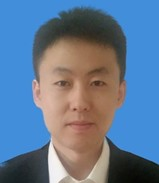

| Dr. Lionel Vayssieres Ph.D. (1995) Université Pierre et Marie Curie, France Director for Division Research & Chief Scientist, International Research Center for Renewable Energy (IRCRE) Full Professor, Xi’an Jiaotong University, China Email: Lionelv@xjtu.edu.cn Phone/Fax: +86 (0)29-8266-4665 |
Born in 1968, Dr. Lionel Vayssieres obtained his High School Diploma in Mathematics & Life Sciences in 1986, a BSc. and a MSc. in Physical Chemistry in 1989 and 1990, respectively and a Ph.D. in Inorganic Chemistry in November 1995 (after his 1994 military duty as a scientist for the French Navy) from the Université Pierre et Marie Curie, Paris, France for his research work on the Interfacial & thermodynamic growth control of metal oxide nanoparticles in aqueous solutions. Thereafter, he joined Uppsala University, Sweden as a postdoctoral researcher for the Swedish Materials Consortium on Clusters and Ultrafine Particles to extend his concepts and develop purpose-built metal oxide nanomaterials for photoelectrochemical applications as well as to characterize their electronic structure by x-ray spectroscopies at synchrotron radiation facilities.
He has been invited as a visiting scientist at: the University of Texas at Austin, USA; the UNESCO Centre for Macromolecules & Materials, Stellenbosch University, and iThemba LABS, South Africa; the Glenn T. Seaborg Center, Chemical Sciences Division and the Advanced Light Source at Lawrence Berkeley National Laboratory (LBNL), CA, USA; The Texas Materials Institute, USA; The Ecole Polytechnique Fédérale de Lausanne (EPFL), Switzerland; the University of Queensland (UQ), Australia; Karlsruhe Institute of Techonlogy (KIT), Germany; Nanyang Technological University (NTU), Singapore; The Brazilian Nanotechnology National Laboratory (LNNANO). He was also an independent scientist at the National Institute for Materials Science (NIMS) in Tsukuba, Japan for 8 years (2004-2012).
He has (co-)authored 100+ publications in major international journals, proceedings, books and book series which have generated 14400+ citations since the year 2000 (4700+ since 2016, Google Scholar); Top 1% Scientists in Materials Science (Thomson Reuters). Essential Science Indicators (March 2014) shows 232 citations per paper for Materials Science and 89 citations per paper for All Fields; All time 8 ESI highly cited papers (5 as first and corresponding author) in Materials Science, Chemistry, Physics, and Environment/Ecology. A single-author 2003 paper No. 1 in the Top 10 hot papers in Chemistry (Jul-Aug 05), No. 2 (Sep-Dec 05) and No. 3 (May-June 05) in the Top 3 hot papers in Materials Science and highest cited paper for the country of Sweden for many years (Essential Science Indicators).
He has been interviewed by In-Cites and by Science Watch (Thomson Reuters/Clarivate Analytics) in 2006 for this single authored 2003 paper cited now 3200+ times and another time in 2010 for a 2004 highly cited paper in Chemistry cited now 330+ times. Two other first-and-corresponding author 2001 original research papers have already been cited 1200+ times each. A 2012 and a 2006 articles highly cited in Physics and Material Science have already been cited 1500+ and 780+ times, respectively.
He is the editor and a co-author of the 2009 Wiley book "On Solar Hydrogen & Nanotechnology" on display in 250 libraries in 36 countries worldwide.
He has given 428 talks in 33 countries: 217 lectures at international conferences/workshops (63 plenary/keynote, 131 invited, 21 contributed, 2 tutorials) including one of the prestigious Spring MRS Symposium X lecture in 2015 as well as 211 seminars at universities, governmental and/or industrial research institutes. He also acted as an organizer, chairman, executive program committee, and/or advisory member for major international conferences (MRS, E-MRS, SPIE, ACERS, IEEE, TCM...) and for various projects worldwide (UNESCO, IUPAC...) as well as an Expert for NSF, DOE-BES, ACS PRF, NSERC, CFI CNRS, ESF, ANR; NRF, ASTAR, SRF, FONDECYT and the prestigious Global Energy Prize.
He is also, since 2003, the founding editor-in-chief of the International Journal of Nanotechnology and a referee for 100+ SCI journals (Nature, Nature Materials, Nature Photonics, Energy Environ. Sci., JACS, Angew. Chemie, Adv. Mater, ACS Energy Lett...) as well as for major funding agencies in North & South America, Europe, Asia, and Africa.
Since 2012, he is a full time professor and a candidate of National Talent Program, chief scientist, co-founder, and scientific director of IRCRE- International Research Center for Renewable Energy (655 research articles, 25210 citations, h-index=75, 28 ESI Highly Cited), State Key Laboratory for Multiphase Flow in Power Engineering, School of Energy & Power Engineering at Xi'an Jiaotong University, Xi'an (Shaanxi province), China.
He's also the recipient of the 2014 Sanqin provincial and the 2016 National Chinese Government Friendship awards “in appreciation of his enthusiastic support for China’s construction and his friendly cooperation.”, one of the Most Cited Researcher in China in the field of Materials Science since inception in 2014, 2015, 2016, 2017, 2018 and 2019 (Scopus/Elsevier) as well as one of the 2016 American Ceramic Society (ACerS) Global Ambassador Awardee for "his outstanding contributions and leadership to many Society conferences and professional outreach activities towards the global scientific community." and listed in the 2020 Top 2% World Scientist Ranking (Stanford University study based on Scopus/Mendeley citation datasets) as #175 among 75210 scientists (Top 0.23 %) in Nanoscience & Nanotechnology.
| Dr. Gunnar Westin Ph.D. (1995) Stockholm University, Sweden Director for Division Research & Chief Scientist, International Research Center for Renewable Energy (IRCRE) Full Professor, Chemistry-Ångström, Uppsala University, Sweden Email: gunnar.westin@kemi.uu.se Phone: +46 (0)18-471-3740 Fax: +46 (0)18-471-3726 |
Gunnar Westin, Ph.D. 1995 and Docent 1998 at Stockholm University moved his group to
Uppsala University during the year 2000 taking a Senior Lecturer position in Chemical nanotechnology. He
became a Professor in the same area in 2006. He also held a part time position at ABB Corporate Research
in 2002-2003, implementing solution processing. His research stretches from fundamental to applied and
involves all steps of solution based materials synthesis; from design of molecular heterometallic
alkoxide precursors, via solution processing, to studies of the target ceramic, composite and metallic
materials. The focus is on complex composition and shape nanomaterials, such as thin films, ultra thin
coatings, sponges and compacts with applications in renewable energy, electro-ceramics, multiferroics
and hard materials.
Several of the invented processes have been up-scaled together with industry and one is applied globally
in large scale; the superior hardness and toughness WC-Co composites used in mining, drilling and
infrastructure excavation. Another example of up-scaling is the low cost roll-to-roll process for
Ni-Al2O3 nanocomposite films with record high solar thermal absorption efficiency.
Westin pioneered the area of sol-gel processing in Sweden during his graduate student time, building a
research laboratory and group from scratch after his own ideas. He has been the leader of a large number
of academic and industry projects and executive board member and area manager of a competence centre.
Westin has published 80+ journal papers, 7 patent families and given 175+ talks (Last 5 years; 40
invited/keynote/tutorial talks at international conferences) He served as a member of the board of
directors of the International Sol-Gel Society 2004-2009, is Editorial board member of Int. J.
Nanotechnology, Composites B J. and Associate editor of Int. J. Nanoscience, and reviewer for 25+
journals. He has co-/organised 20+ international conferences and served in review panels in Sweden and
Europe and reviewed applications for grants and positions for a number of international Science
organisations.
| Dr. Sanjay Mathur Ph.D. (1993) University of Rajasthan, India Director for Division Research & Chief Scientist, International Research Center for Renewable Energy (IRCRE) Chair Professor, University of Cologne, Germany Email: sanjay.mathur@uni-koeln.de Phone: +49-221-470-4107 Fax: +49-221-470-4899 |
Prof. Sanjay Mathur is the director of the Institute of Inorganic Chemistry at the University
of Cologne, Cologne, Germany. His research interests focus on various facets of chemical
nanotechnologies. He holds five patents and has authored/co-authored over 220 original research
publications and has edited several books. He is a Titular Member of the Inorganic Chemistry Division of
International Union of Pure and Applied Chemists (IUPAC) and serves as the Chair of Engineering Ceramics
Division of the American Ceramic Society. A member of the Advisory Board of the Federation of German
Materials Science (DGM) and also serves on the Advisory Committees of a number of international
societies, and research institutions, he also serves on the Board of the German Chemical Industries
Network CHEMCOLOGNE and an appointed member of the Technical Advisory Board of the global company
Henkel.
He is currently the Fellow of ACerS, meanwhile, he is also rewarded as World Class University
Professorship at the Chonbuk University, Korea. He is a member of the Inorganic Chemistry Division of
International Union of Pure and Applied Chemists (IUPAC) and a member of the ISO Technical Committee 229
on Nanotechnologies. He serves as Associate Editors for International Journal of Applied Ceramics
Technology, International Journal of Nanoscience and Nanomaterials. He is the Principal Editor of J.
Mater. Research (MRS). He is also on the Editorial Boards of Journals Ceramics International,
International Journal of Nanotechnology, Materials, Journal of Ceramic Science and Technology, Journal
of Electroceramics and NanoEnergy.
Prof. Mathur currently serves as the Chair of Engineering Ceramics Division of the American Ceramic
Society. He is an Academician of the World Academy of Ceramics. He has been nominated as the “International
Ambassador” of the University of Cologne to foster international collaboration. He is a member of
the Advisory Board of the Federation of German Materials Science (DGM) and also serves on the Advisory
Committees of a number of international societies, and research institutions. He is also on the Board of
the German Chemical Industries Network CHEMCOLOGNE and an appointed member of the Technical Advisory
Board of the global company Henkel. He is appointed on the Review Advisory Panel of the CSIR, South
Africa since 2009.
He had organized several international and national conferences and Symposia. He has got several awards
including the fellowships of the Alexander von Humboldt Foundation, and the stipend of the Federation of
German Chemical Industries for excellence in research. He was an ASM International-Indian Institute of
Materials (ASM-IIM) visiting lecturer for 2009. He was given the Global Star Award (2010) of the ECD of
American Ceramic Society. He holds Visiting Professorships at the Central South University, China and
National Institute of Science Education and Research (NISER), India.
Association with IUPAC: He was a Young Observer at the 42nd IUPAC General Assembly, Ottawa,
August 2003. Following this he served as the member of Inorganic Chemistry Division as National
Representative, Associate Member, and Titular Member. He has been an active member of the Materials
Sub-committee and was the Co-organizer of WAM –III in 2005 in Stellenbosch, South Africa. He is
currently the Secretary of the Interdivisional Materials Subcommittee. He was Co-chairman of the IUPAC
Project on “Terminology in Nanotechnology” (2008-2010).
| Dr. Samuel S. Mao Ph.D. (2000) University of California at Berkeley, USA Visiting Professor, International Research Center for Renewable Energy (IRCRE) Career Scientist, Lawrence Berkeley National Laboratory, USA Adjunct Professor, University of California, USA Email: ssmao@me.berkeley.edu Phone: (510) 486-7038 Fax: (510) 486-7303 |
Professor Samuel S. Mao, Director of Clean Energy Engineering Center, is a career staff scientist of Lawrence Berkeley National Laboratory and an adjunct professor of the University of California at Berkeley. He received his Ph.D. degree from the University of California at Berkeley in 2000, and since then he has been leading a multidisciplinary research team developing clean energy technologies as well as studying enabling materials science and ultrafast laser technology. He has published over a hundred peer-reviewed journal articles, which have received more than 10,000 citations. He is a frequent speaker at many leading universities and has delivered invited speeches at more than 50 international conferences. He has served as a technical committee member, program review panelist, grant proposal reviewer, and national laboratory observer for the U.S. Department of Energy. He is also an expert reviewer for agencies such as the National Science Foundation and the Department of Defense in the U.S., and the governments of Japan and Canada. He was a founding co-chair/organizer of the 1st International Conference on Energy Nanotechnology, the 1st International Symposium on Transparent Conducting Materials and the 1st International Workshop on Renewable Energy. He was a general chair for the 2011 Spring Materials Research Society (MRS) Meeting, and a co-chair of the 2012 International Conference on Clean Energy. He is the recipient of the 2011 R&D 100 International Technology Award.
| Dr. Liejin Guo Ph.D. (1989) Xi'an Jiaotong University, China Director, International Research Center for Renewable Energy (IRCRE) Director, State Key Laboratory of Multiphase Flow in Power Engineering Academician, Chinese Academy of Sciences Full Professor, Xi'an Jiaotong University, China Email: lj-guo@mail.xjtu.edu.cn Phone: +86 (0)29 82663895 Fax: +86 (0)29 82669033 |
 |
Prof. Liejin Guo received his Ph.D. in Power Engineering and Engineering Thermal Physics
of Xi'an Jiaotong University. He has been elected as a member of the Chinese Academy of Sciences (2017) and a fellow of The World Academy of Sciences (2021). His research interests focus on the laws of multi-phase flow and heat and
mass transfer in high efficient clean energy-power system and heat-work conversion process, physical
theory and key technologies in exploitation and mixed transportation of oil and gas, high efficient
transformation of renewable energy such as solar energy and biomass energy and hydrogen energy.
He has been principal investigator for tens of projects funded by state, province or ministries. The
National Basic Research Programs (“973 Program”), named as Basic Research of Mass Hydrogen Production
Using Solar Energy and has been awarded twice. He also has been sponsored with NSFC major program, key
program, State and important national science & technology specific projects from “9th Five-Year
Plan” to “12th Five-Year Plan”, etc.
He has been serving as member of Scientific Committee of the International Centre for Heat and Mass
Transfer (ICHMT), Corresponding member of the International Information Center for Multiphase Flow
(ICEM), member of Chinese expert team of International Partnership for Hydrogen Economy (IPHE), overseas
reviewer of EPSRC, member of the International Association for Hydrogen Energy (IAHE), and member of
ACS. He is also a member of consultant expert team of NSFC for Engineering Thermophysics and Energy
Utilization, vice director and member of Engineering Department 1 of Scientific Committee of MOE, member
of Board of Directors and Director of Specialty Committee of Multiphase Flow in Chinese Society of
Engineering Thermophysics, committee member of Chinese Renewable Energy Society and Standing Director of
Chinese Association of Hydrogen Energy, committee member of Chinese Society of Desert.
Prof. Liejin Guo has been awarded two Second Class prizes of National Natural Science Award (2007 and 2017), one Second Class prize of National Technology Invention Awards (2017), one First Class Prize of Shaanxi Provincial Technical Innovation Award (2007), one First Class Prize of MOE
Natural Science Award in 2006), one First Class Prize of Shaanxi Provincial Natural Science Award in (2003), as
well as another 4 Second Class Prizes of MOE Scientific and Technological Progress Award (1991, 1996,
1997 and 1998). He has awarded the First National Innovation Award in 2017. Prof. Liejin Guo aslo has published more than 400 papers in journals and conferences,
given over 30 invited or keynote lectures in international conferences. He participated in the compiling
of 6 handbooks, one of which, 《Handbook of Chemical Engineering (2nd E)》, received the First Prize of
National Book Award in 1997. He also published 1 academic book, 《Dynamics of Two-phase and Multiphase
Flow》, on his own.
| Dr. Guoxiang Wang Ph.D. (1995) University of California at Santa Barbara, USA Chief Scientist, International Research Center for Renewable Energy (IRCRE) Tenured professor, Department of Mechanical Engineering, University of Akron, USA Cheung Kong Scholar Chair Professor, Xi’an Jiaotong University, China |
 |
Dr. Guoxiang Wang is presently a Tenured Professor of Department of Mechanical Engineering in the University of Akron. He received his Ph.D. from the University of California at Santa Barbara in 1995, his commitment research mainly on theory and application research of some disciplines that are related to Engineering Thermophysics, Nonequilibrium phase transition, Rapid Solidification, Crystal Growth, Materials Science and Engineering and Biomedical Engineering. Besides he has published 79 papers in international conferences, Dr. Wang has authored a monograph and has published 52 papers in major international journals which have already generated 683 citations, of which 410 have been cited by others. In the social service aspect, Dr. Wang has been serving as a member of TMS “Solidification committee”, as a member of ASME K-15 Committee, as a chapter president in some important international conferences many times and as a foundation discussant U.S. National Science.
| Dr. Tianshou Zhao Ph.D. (1995) University of Hawaii, USA Chief Scientist, International Research Center for Renewable Energy (IRCRE) Full Professor, Department of Mechanical Engineering, Hong Kong University of Science and Technology, China Cheung Kong Scholar Chair Professor, Xi’an Jiaotong University, China Email: metzhao@ust.hk Phone: +852 2358 8647 |
 |
Prof. T.S. Zhao is presently a Chair Professor of Mechanical Engineering at HKUST and Director of the HKUST Energy Insitute. His academic career started with a Bachelor’s and a Master’s degree, both in Engineering Thermo-physics, respectively, in 1983 and in 1986, from Tianjin University, China, followed by a Ph.D. degree at the University of Hawaii, USA, in 1995 with Professor Ping Cheng. Professor Zhao is an internationally renowned expert in energy engineering and is distinguished for his seminal contributions in the areas of fuel cells, multiscale multiphase heat and mass transport with electrochemical reactions, and computational modeling. He has published more than 170 papers in prestigious journals in the fields of energy science and engineering. His 16 papers are in the list of the ESI highly cited papers. The outstanding level of his scientific research has been recognized by many recent awards, including the Most Cited Article Award for a paper published in Electrochemistry Communications and for another two in Electrochimica Acta, the Overseas Distinguished Young Scholars Award from the Natural Science Foundation of China (NSFC), the Croucher Senior Fellowship award from the Croucher Foundation, and the Yangtze River Chair Professorship from the Chinese Ministry of Education. In addition to his scholastic achievements with outstanding research credential, he has also received many teaching excellence awards, including the Bechtel Foundation Engineering Teaching Excellence Award from the HKUST. He is a Fellow of the American Society of Mechanical Engineers (ASME). In the international community, Prof. Zhao serves as Editor of the Royal Society of Chemistry (RSC) Energy & Environment Series, Regional Editor of Applied Thermal Engineering, and has been a member of the editorial board for more than 21 international journals.
| Dr. Fevzi Daldal Ph.D. (1997) University of Strasbourg, France Co-chief Scientist, International Research Center for Renewable Energy (IRCRE) Member, Turkish Academy of Science, Turkey Full Professor, University of Pennsylvania, USA Honorary Professor, Xi'an Jiaotong University, China Email: fdaldal@sas.upenn.edu Phone: 215-898-4394 |
 |
Dr. Fevzi Daldal is a professor of University of Pennsylvania in America that partly stems from his excellent educational background. After he received his Ph.D. from University of Strasbourg in France in 1997, he started his Post-Doc. career in Harvard Medical School and then joined in Cold Spring Harbor Laboratory as a scientist. The research interests of Dr. Daldal mainly focus on photosynthetic and respiratory electron transfer pathways and structure, function and biogenesis of cytochrome complexes. In addition, he is a member of Turkish Academy of Science, a fellow of American Academy of Microbiology, a fellow of American Association for the Advancement of Science as well as a Deutscher Akademischer Austausch Dienst (DAAD) Alumnus.
| Dr. Chenn Qian Zhou Ph.D. (1991) Carnegie Mellon University, USA Co-chief Scientist, International Research Center for Renewable Energy (IRCRE) Full Professor, Mechanical Engineering, Purdue University Calumet, USA Director, Center for Innovation through Visualization and Simulation (CIVS) Email: czhou@purduecal.edu Phone: 219-989-2665 |
 |
Prof. Chenn Qian Zhou, a director of Department of Mechanical Engineering in Purdue University Calumet. She was awarded Ph.D. degree by Carnegie Mellon University in 1991. Since then her research interests mainly focus on Numerical Simulation of Multiphase Reacting Flow, Computational Fluid Dynamics, Spray, Combustion, Heat Transfer, Nox, Sox and the Forming and Control of Other Air Pollutions. She has published more than 130 papers and holds three software copyrights. She is committed to the development of the latest computational fluid dynamics model and brings this technology to a variety of industrial application, which improves the service period and energy efficiency of steel melting furnace, some of theories of multiphase flow, such as the transportation of solid particles, fluidized particles and absorption of Nox, are applied to the control models for combustion pollutants groundbreaking, which reduces the emission of large industrial combustion equipment. This outstanding woman won the prize of Josef S. Kapitan of American Steel Technology Association and the prize of R&D 100 of R&D magazine from USA. Additionally, Dr. Chenn Qian Zhou is also a fellow of American Society of Mechanical Engineers, she was awarded the prize of Distinguished Teaching and Distinguished Research from Purdue University and a prize of American Society of Technical innovation invention.
| Dr. Liang-Shin Fan Ph.D. (1975) West Virginia University, USA Co-chief Scientist, International Research Center for Renewable Energy (IRCRE) Foreign academician, Chinese Academy of Engineering, China Outstanding Professor, Ohio State University, USA Email: Fan.1@osu.edu Elena Chung, Chung.461@osu.edu Phone: (614)688-3262, (614) 247-2787 |
 |
Prof. Liang-Shin Fan received his Ph.D. in West Virginia University in 1975. The main research fields of Dr. Fan are clean fossil energy conversion systems, powder technology, particles multiphase flow reaction engineering, microstructure of particles and multiphase flow system, multiphase computational fluid dynamics and other fields of basic science and engineering research. Within several decades, Dr. Fan has written or edited 14 monographs (19 chapters in all); he is the author of 13 patents; he has published more than 290 journal articles and more than 250 proceedings papers. As a distinguished professor in the Ohio State University, Dr. Liangshin Fan also is honored kinds of social titles: to be elected a foreign member of Chinese Academy of Engineering in 2009; to be named one of the most 100 distinguished Chemical Engineering experts in 2008; to obtain E.V. Murphree Engineering Chemical Award of American Chemical society in 2008; to be a corresponding member of Mexican Academy of Sciences in 2006.
| Dr. Yueshe Wang Ph.D. (1998) Xi'an Jiaotong University, China Full Professor, International Research Center for Renewable Energy (IRCRE) Email: wangys@mail.xjtu.edu.cn Phone: 029-82667326 |
 |
Professor Wang was awarded Ph.D. in June of 1998, thereafter, he continued his postdoctoral at Kyushu University, Japan. He is currently the secretary of Academic Committee of State Key Laboratory of Multiphase Flow in Power Engineering, School of Energy & Power Engineering, Xi'an Jiaotong University. Professor Wang served as the project leader of 863 sub-projects. Professor Wang mainly focus on those fields: vapor-liquid two-phase flow and heat transfer characteristics, new energy and efficient solar thermal utilization, research and design on cooling efficient microelectronic components and its micro-channel with a high energy density, studies on the flow characteristics of storage and transportation of oil and gas and its sub-phase flow measurement, some thermophysical problems on preparation of porous mental materials.
| Dr. Bofeng Bai Ph.D. (1999) Xi'an Jiaotong University, China Vice Director, State Key Laboratory of Multiphase Flow in Power Engineering Full Professor, International Research Center for Renewable Energy (IRCRE) E-mail: bfbai@mail.xjtu.edu.cn Phone: +86-29-8266-5316 |
 |
Professor Bai achieved his Ph.D. at Xi'an Jiaotong University, 1999. He not only is the director and academic secretary of Chinese Society of Engineering Thermophysics Committee, but also is the candidate of Program for New Century Excellent Talents in University of Ministry of Education of China. Meanwhile, he is the committee of Heat exchanger Equipment Sub-Committee of Pressure Vessel Standardization Technical Committee. Prof. Bai is also the associate editor of Measurement, Measurement Sensor and Journal of Mechanical Engineering Science (Proc. IMechE Part C).
| Dr. Bin Chen Ph.D. (2002) Xi'an Jiaotong University, China Vice Director, State Key Laboratory of Multiphase Flow in Power Engineering Full Professor, International Research Center for Renewable Energy (IRCRE) Email: chenbin@mail.xjtu.edu.cn Phone: 029-82667326 |
 |
Professor Chen, the vice director of State Key Laboratory of Multiphase Flow in Power Engineering, the candidate of Program for New Century Excellent Talents in University. He was employed by National Maritime Research Institute of Japan as a postdoctoral researcher from 2003 to 2004, he has worked at Xi'an Jiaotong University since 1996, he served as the deputy head of multiphase flows professional group of Society of Fluid Mechanics Branch of China, the member of Society of Chemical Engineering of Japan and the member of Society of Engineering Thermophysics of China. Professor Chen has been working on those fields: fundamentals and basic and theoretical applications research of Multiphase Flow, construction of two-phase turbulence model, unstructured mesh generation technology, the interface capturing algorithm and biomedical Multiphase Flow research.
| Dr. Jinjia Wei Ph.D. (2002) Kyushu University, Japan Full Professor, International Research Center for Renewable Energy (IRCRE) Email: jjwei@mail.xjtu.edu.cn Phone: 82664462 |
 |
Professor Wei received his Ph.D. in Kyushu University, Japan. He was employed by National Advanced Institute of Science and Technology, Tsukuba, Japan. He is also the candidate of Program for New Century Excellent Talents in University, meanwhile he is the winner of China National Funds for Distinguished Young Scientists. Dr. Wei was a co-author of Process Fluid Machinery which was published by Chemical Industry Press of China, 2001. His mainly focus on Two-phase flow and non-Newtonian flow in pump impeller, pipeline fluid flow drag reduction technology and cooling electronics with boiling heat transfer enhancement technology.
| Dr. Liang Zhao Ph.D. (2005) Xi'an Jiaotong University, China Full Professor, International Research Center for Renewable Energy (IRCRE) Email: lzhao@mail.xjtu.edu.cn Phone: 029-82668287 |
Professor Zhao was born in May of 1971, is one of the youngest professor and Doctoral tutor in Xi'an Jiaotong University. He achieved National Natural Science Award in 2007, he also was awarded as a outstanding young Doctor of engineering. Dr. Zhao is currently the vice director of State Key Laboratory of Multiphase Flow in Power Engineering, School of Energy & Power Engineering at Xi'an Jiaotong University. His research interests are mainly in multiphase flow and heat transfer, conversion and utilization of renewable energy and hydrogen energy systems.
| Dr. Dengwei Jing Ph.D. (2007) Xi'an Jiaotong University, China Full Professor, International Research Center for Renewable Energy (IRCRE) Email: dwjing@mail.xjtu.edu.cn Phone: 029-82668769 |
 |
Dr. Jing was born in 1977, he received his Ph.D. in 2007, thereafter he has been engaged in new energy-related teaching and research work. he is currently a full professor of IRCRE, State Key Laboratory of Multiphase Flow in Power Engineering, School of Energy & Power Engineering at Xi'an Jiaotong University. Dr. Jing has been working on those fields: solar hydrogen and power systems related with hydrogen energy, new energy materials and research on their properties.
| Dr. Youjun Lu Ph.D. (2007) Xi'an Jiaotong University, China Vice Director, State Key Laboratory of Multiphase Flow in Power Engineering Full Professor, International Research Center for Renewable Energy (IRCRE) Email: yjlu@mail.xjtu.edu.cn Phone: 029-82665316 |
 |
Dr. Youjun Lu achieved his doctor degree at Xi'an Jiaotong University in 2007. He is currently a full professor of IRCRE, State Key Laboratory of Multiphase Flow in Power Engineering, School of Energy & Power Engineering at Xi’an Jiaotong University. Dr. Lu was granted as the winner of Excellent Doctoral Dissertation of China, he is also awarded as a candidate of Program for New Century Excellent Talents in University by Ministry of Education. Dr. Lu has a national patent which is apparatus and method of hydrogen production by partial oxidation and gasification of biomass waste supercritical water fluidized bed.
| Dr. Shaohua Shen Ph.D. (2010) Xi'an Jiaotong University, China Vice Director, State Key Laboratory of Multiphase Flow in Power Engineering Full Professor, International Research Center for Renewable Energy (IRCRE) Email: shshen_xjtu@mail.xjtu.edu.cn Phone: 029-82668296 |
 |
Dr. Shen received his Ph.D. at Xi'an Jiaotong University in 2010, then he continued his postdoctoral at University of California at Berkeley from November, 2011 to October, 2012. He is currently a full professor of IRCRE, State Key Laboratory of Multiphase Flow in Power Engineering, School of Energy & Power Engineering, Xi'an Jiaotong University. Dr. Shen was the winner of the National Excellent Doctoral Dissertation, 2012. He has published more that 100 papers in Chemical Reviews, Nature Photonics, etc., and recieved more than 10000 citations. His research interests include synthesis of nanomaterials and development of devices for photocatalytic and photoelectrochemical solar energy conversion.
| Dr. Hui Jin Ph.D. (2011) Xi'an Jiaotong University, China Full Professor, International Research Center for Renewable Energy (IRCRE) Email: jinhui@mail.xjtu.edu.cn Phone: 029-82660876 |
 |
Dr. Jin received his Ph.D. degree at Xi'an Jiaotong University in 2011. He is currently a full professor of International Research Center for Renewable Energy, State Key Laboratory of Multiphase Flow in Power Engineering, School of Energy & Power Engineering, Xi'an Jiaotong University. He focuses on the supercritical water gasification process and its large scale utilization. He established a demonstration plant for hydrogen production based on coal gasification in supercritical water. He is board member of Chinese society for electrical engineering. He has more than 100 publications indexed by SCI and more than 2700 citations. 7 paper was indexed by ESI (1 hot paper). Awarded by the “Wu Chung-hua outstanding student award” issued by Chinese Society of Engineering Thermophysics in 2011, Awarded by first prize in Science and Technology of Shaanxi province (ranking 3) In 2014.
| Dr. Maochang Liu Ph.D. (2014) Xi'an Jiaotong University, China Full Professor, International Research Center for Renewable Energy (IRCRE) Email: maochangliu@mail.xjtu.edu.cn Phone: 029-82668296 |
 |
Maochang Liu is currently a full professor in International Research Center for Renewable Energy, State Key Laboratory of Multiphase Flow in Power Engineering, Xi'an Jiaotong University, China. He received his Ph.D. degree in Power Engineering and Engineering Thermal Physics in 2014 from Xi'an Jiaotong University, Xi'an, China. From Sep. 2011 to Sep. 2013, he worked as a visiting scholar at Georgia Institute of Technology with Prof. Younan Xia. Prof. Liu's research interest centered on the fundamental theory of solar to hydrogen conversion with high efficiency and low cost, as well as the design and development of corresponding reaction systems. He has published more than 60 SCI papers in major international journals, including Nat. Energy, Nat. Commun., PNAS, JACS, Energy Environ. Sci.. He also applied 4 patents for invention (2 items have been authorized). He is currently a member of Special Committee on Hydrogen Energy of the Chinese Renewable Energy Society, the academic secretary of the Multi-phase Flow Branch of the Chinese Society of Engineering Thermology, the guest editor or editorial board member of the Int. J. Hydrogen Energy, J. Photon. Energy, Prog. Energy Fuels and Energy Saving Technology. He has received a number of prestigious awards, including 1st Class Science and Technology Award of Shaanxi Province (Rank the 5th) in 2016, 2nd Class National Natural and Science Award (Rank the 5th) in 2017, and 1st Class Academic Paper in Natural Science of Shaanxi Province (Rank the 1st) in 2020.
| Dr. Jinzhan Su Ph.D. (2011) Xi'an Jiaotong University, China Full Professor, International Research Center for Renewable Energy (IRCRE) Email: j.su@mail.xjtu.edu.cn Phone: 029-82668296 |
 |
Jinzhan Su received his Ph.D. degree at Xi'an Jiaotong University, Xi'an, China in 2011. From Oct. 2008 to Sep. 2010, he worked as a visiting scholar in the Pennsylvania State University, PA, United States. He is currently a professor in the International Research Center for Renewable Energy, State Key Laboratory of Multiphase Flow in Power Engineering, Xi'an Jiaotong University, China. His current research focuses on nanostructural semiconductor for energy conversion, photoelectrochemical and mass flow properties of semiconductor/electrolyte interface and PEM fuel cells.
| Dr. Qingyun Chen Ph.D. (2007) Nara Women's University, Japan Full Professor, International Research Center for Renewable Energy (IRCRE) Email: qychen@mail.xjtu.edu.cn Phone: 029-82668769 |
 |
Dr. Chen received her Ph.D. in Nara Women's University, Japan. She was employed as assistant professor in Nara Women's University. She is currently a full professor of IRCRE, State Key Laboratory of Multiphase Flow in Power Engineering, School of Energy & Power Engineering, Xi'an Jiaotong University. Dr. Chen served as a reviewer for many international journals, such as Journal of Power Source, International Journal of Hydrogen Energy, Journal of Material Science, International Journal of Photoenergy, Carbon, Polymer. She mainly focus on Microbial fuel cell and Environmental & Green Catalysis.
| Dr. Jianbing Huang Ph.D. (2008) Tsinghua University Associate Professor, International Research Center for Renewable Energy (IRCRE) Email: huangjb@mail.xjtu.edu.cn Phone: 029-82665591 |
 |
Dr. Huang received his Ph.D at Tsinghua University 2008. he is currently an associate professor of IRCRE, State Key Laboratory of Multiphase Flow in Power Engineering, School of Energy & Power Engineering at Xi'an Jiaotong University. Dr. Huang served as the members of editor boards of The Scientific World Journal: Energy (2013-), Advances in Energy and Power Engineering (2013-), International Journal of Energy Research (2010-2012) and the reviewers of Journal of Power Sources, Electrochemistry Communications, International Journal of Hydrogen Energy, Journal of The Electrochemical Society, Materials Chemistry and Physics, Solid State Sciences, Journal of Nanomaterials. Dr. Huang mainly focuses on those fields: solid state ionics in nano/micro composite materials, intermediate temperature fuel cells, catalysis in hydrogen production by thermochemical water decomposition.
| Dr. Mingtao Li Ph.D. (2010) Xi'an Jiaotong University, China Associate Professor, International Research Center for Renewable Energy (IRCRE) Email: mingtao@mail.xjtu.edu.cn Phone: 029-82668296 |
 |
Mingtao Li received his Ph.D. at Xi’an Jiaotong University, Xi'an, China in 2010. He is currently an associate professor of International Research Center for Renewable Energy, State Key Laboratory of Multiphase Flow in Power Engineering, School of Energy & Power Engineering, Xi'an Jiaotong University. he has been a postdoctoral at University of North Texas from August, 2012-July, 2014. Dr. Li mainly focuses on those fields: conversion and utilization of renewable energy, photocatalysis and photoelectrochemical hydrogen, application of carbon nanomaterials in the energy fields.
| Dr. Jinwen Shi Ph.D. (2012) Xi'an Jiaotong University, China Associate Professor, International Research Center for Renewable Energy (IRCRE) Email: jinwen_shi@mail.xjtu.edu.cn Phone: 029-82668767 Fax: 029-82669033 |
 |
Assoc. Prof. Dr. Jinwen Shi received his BS degree of Environmental Engineering (Jul. 2005) and his Ph.D. degree of Power Engineering and Engineering Thermophysics (Jun. 2012) under the supervision of Prof. Liejin Guo at Xi'an Jiaotong University, Xi'an, China. He worked as a visiting Ph.D. student (Oct. 2008~Sep. 2009) under the supervision of Prof. Jinhua Ye at National Institute for Materials Science in Tsukuba, Japan. He is an associate professor at the International Research Center for Renewable Energy, State Key Laboratory of Multiphase Flow in Power Engineering, and at the Department of New Energy Science and Engineering, School of Energy and Power Engineering, Xi'an Jiaotong University. His research interest is focused on the conversion and utilization of renewable energies, new energy materials, and photocatalysis, especially the development of novel photocatalysts and photocatalytic systems for water splitting under visible-light irradiation. He took charge of 1 national project, and 5 provincial/ministerial projects. He published nearly 50 SCI-indexed papers in international journals and applied for 7 China invention patents. He achieved awards, such as the Wu Chung-hua outstanding student award (issued by Chinese Society of Engineering Thermophysics in 2012), the Excellent Paper Awards (issued by 11th China Hydrogen Energy Conference& 3rd Mainland, Taiwan, and Hong Kong Symposium on Hydrogen Energy in 2010, and by Progress in Natural Science: Materials International in 2015), the Excellent Doctoral Dissertation awards (issued by Xi'an Jiaotong University in 2013 and by Shaanxi province in 2014), and the first prize in Science and Technology (issued by Shaanxi Province in 2017).
| Dr. Yubin Chen Ph.D. (2013) Xi'an Jiaotong University, China Associate Professor, International Research Center for Renewable Energy (IRCRE) Email: ybchen@mail.xjtu.edu.cn Phone: 029-82668296 |
 |
Yubin Chen received his Ph.D. degree at Xi'an Jiaotong University, Xi'an, China in 2013. From Sep. 2011 to Sep. 2012, he worked as a visiting scholar at Case Western Reserve University in USA under the supervision of Prof. Clemens Burda. He is currently an associate professor in the International Research Center for Renewable Energy, State Key Laboratory of Multiphase Flow in Power Engineering, Xi'an Jiaotong University, China. His current research focuses on photocatalysis, photoelectrochemical water splitting, and functional nanomaterials for energy conversion.
| Dr. Ya Liu Ph.D. (2018), International Research Center for Renewable Energy (IRCRE), Xi'an Jiaotong University, China Postdoctoral Researcher, International Research Center for Renewable Energy (IRCRE), Xi'an Jiaotong University, China Email: yaliu0112@mail.xjtu.edu.cn |
 |
Ya Liu received his Ph.D. degree at Xi'an Jiaotong University in 2018 under the supervision of Prof. Liang Zhao. Currently, he is an assistant professor at Xi'an Jiaotong University. From 2015 to 2016, he was a visiting scholar at Lawrence Berkeley National Laboratory under the supervision of Dr. Joel Ager. His research interests focus on the development of new materials and test-bed prototypes based on abundant elements for solar fuel production.
| Dr. Xiangjiu Guan Ph.D. (2018), International Research Center for Renewable Energy (IRCRE), Xi'an Jiaotong University, China Postdoctoral Researcher, International Research Center for Renewable Energy (IRCRE), Xi'an Jiaotong University, China Email: xj-guan@mail.xjtu.edu.cn |
 |
Xiangjiu Guan received his Ph.D. degree at Xi'an Jiaotong University in 2018. Currently, he is a post-doctoral researcher at International Research Center for Renewable Energy, State Key Laboratory of Multiphase Flow in Power Engineering, School of Energy & Power Engineering, Xi’an Jiaotong University. His research interests focus on fabrication of unassisted overall water splitting system based on highly efficient photocatalysts/photoelectrodes, especially on morphology control, heterostructure construction, cocatalyst designing, mechanism investigation of semiconductor-based photocatalyst/photoelectrodes. From Sept. 2015 to Sept. 2016 he worked as a visiting scholar at McGill University, Canada under the supervision of Prof. Zetian Mi for 1 year awarded by the China Scholarship Council (CSC).
| Dr. Muhammad Shuaib Khan Ph.D. (2018), Waseda University, Japan Postdoctoral Researcher, International Research Center for Renewable Energy (IRCRE), Xi'an Jiaotong University, China Email: m.shuaibkhan@mail.xjtu.edu.cn |
 |
Muhammad Shuaib Khan received his Ph.D. degree at Graduate School of Advanced Science and Engineering while working in Functional Nanosheets Group at National Institute of Material Sciences (NIMS), under joint graduation program of Waseda University and NIMS, Japan in 2018. Currently, he is a post-doctoral researcher at International Research Center for Renewable Energy, State Key Laboratory of Multiphase Flow in Power Engineering, School of Energy & Power Engineering, Xi'an Jiaotong University. His research interest is focused on the designed synthesis of 2D materials based heterostructure for efficient photocatalytic hydrogen evolution.
| Ximin Zhang Ph.D. Xi'an Jiaotong University, China Senior Engineer, International Research Center for Renewable Energy (IRCRE) |
 |
Ximin Zhang was born in 1957, received his Doctor degree at Xi'an Jiaotong University. He is currently a senior engineer of International Research Center for Renewable Energy, State Key Laboratory of Multiphase Flow in Power Engineering, School of Energy & Power Engineering, Xi'an Jiaotong University. He is currently responsible for all equipments related with multiphase flow, including aspects of oil-gas-water.
| Lijing Ma Senior Engineer, International Research Center for Renewable Energy (IRCRE) Email: ljma@mail.xjtu.edu.cn Phone: 029-82669082 |
 |
Lijing Ma is currently a senior engineer of International Research Center for Renewable Energy, State Key Laboratory of Multiphase Flow in Power Engineering, School of Energy & Power Engineering, Xi'an Jiaotong University. She mainly focuses on catalysts material testing.
| Yechun Wang Ph.D. candidate, Xi'an Jiaotong University, China Senior Engineer, International Research Center for Renewable Energy (IRCRE) |
 |
Yechun Wang was born in 1982, is a Ph.D. candidate for Thermal Engineering. He is currently an engineer of International Research Center for Renewable Energy, State Key Laboratory of Multiphase Flow in Power Engineering, School of Energy & Power Engineering, Xi'an Jiaotong University. He is mainly working on multiphase flow testing.
| Penghui Guo Ph.D. candidate, Xi'an Jiaotong University, China Engineer, International Research Center for Renewable Energy (IRCRE) Email: ph-guo@mail.xjtu.edu.cn Phone: 029-82668296-18 |
 |
Penghui Guo is a Ph.D. candidate for Thermal Engineering. She is currently an engineer of International Research Center for Renewable Energy, State Key Laboratory of Multiphase Flow in Power Engineering, School of Energy & Power Engineering, Xi'an Jiaotong University. She has been working on operating SEM(scanning electron microscope), TEM(transmission electron microscope), FTIR( Fourier Transform infrared spectroscopy), PLS, XPS(X-ray photoelectron spectroscopy), Microwave Synthesizer and Nanosecond Lasers.
| Kehila Yehudá Pérez-Salcedo
PhD candidate in the Department of Renewal Energy at the Scientific Research Center of Yucatan, Mexico Visiting Researcher, International Research Center for Renewable Energy (IRCRE) Period: August 2019- September 2019 E-mail: ksalcedo90@hotmail.com |
Kehila Yehudá Pérez-Salcedo is currently a PhD candidate in the Department of Renewal Energy at the Scientific Research Center of Yucatan (CICY, Mérida, Yucatán, Mexico). She received her Bachelor in Mechanical Engineering (2013) and Master Degree in Materials Science and Energy (2016) from the Autonomous University of Carmen (UNACAR, Ciudad del Carmen, Campeche, Mexico). Her current research focuses on electrocatalysts for the oxygen reduction reaction in fuel cells applications. She is now at the International Research Center for Renewable Energy, State Key Laboratory of Multiphase Flow in Power Engineering, School of Energy & Power Engineering, Xi’an Jiaotong University working on catalysts for supercapacitors applications.
| Dr. Aryane Tofanello
Ph.D. (2015) Federal University of ABC (UFABC), Brazil Postdoctoral Researcher, International Research Center for Renewable Energy (IRCRE) Period: June 2019- January 2020 E-mail: aryane.tofanello@yahoo.com Phone: 15529028942 |
 |
Aryane Tofanello recevied her doctor degree at Federal University of ABC (UFABC) in 2015. Since then, she is a post-doctoral researcher at Laboratory of Alternative Energy and Nanomaterials (LEAN). Currently she is a postdoctoral researcher of International Research Center for Renewable Energy, State Key Laboratory of Multiphase Flow in Power Engineering, School of Energy & Power Engineering, Xi’an Jiaotong University. Her research interests include the investigation of charge generation and separation processes at solid semiconductor / liquid electrolyte interfaces of hematite decorated with plasmonic nanoparticles for water splitting applications.
| Ingrid Rodríguez Gutiérrez Ph.D. candidate in physical chemistry, The Center for Research and Advanced Studies of the National Polytechnic Institute, México Visiting Researcher, International Research Center for Renewable Energy (IRCRE) Period: November 2017- August 2018 E-mail: ingrid.rodriguez@cinvestav.mx Phone: (52) 999 942 9400 ext: 2242 |
Ingrid Rodríguez received her bachelor degree in industrial chemistry at Universidad Autónoma de Yucatán (University of Yucatan) in 2012 and her master degree in the Center for Research and Advanced Studies of the National Polytechnic Institute (CINVESTAV) in 2014. Currently she is Ph. D candidate at Center for Research and Advanced Studies of the National Polytechnic Institute in Gerko Oskam’s research group in Merida, Mexico. Her research is focused on synthesis and characterization of new materials for water splitting applications, including the study of their photoelectrochemical behaviour employing techniques such as Electrochemical Impedance Spectroscopy (EIS), Intesity-Modulated Photocurrent Spectroscopy (IMPS) and Intensity-Modulated Photovoltage Spectroscopy (IMVS). Her research visit has been supported by the National Council for Science and Technology (CONACYT) to join at IRCRE for 10 months.
| Dr. Mohammad Hatami Ph.D. (2015) Babol University of Technology, Iran Postdoctoral Researcher, International Research Center for Renewable Energy (IRCRE) Period: August 2016-August 2017 Email: m.hatami2010@gmail.com |
 |
Mohammad Hatami (M. Hatami), was born on 1987 in Esfarayen, North Khorasan, Iran. He received his BS (2009) and M. Sc (2011) degrees in mechanical engineering from Ferdowsi University of Mashhad, Mashhad, Iran. In 2015, he completed his PhD of energy conversion at Babol University of Technology, Babol, Iran. Before this, he was a Ph.D. visiting scholar researcher in Eindhoven University of Technology (TU/e) inthe Netherlands.Currently he is a post-doctoral researcher ofInternational Research Center for Renewable Energy, State Key Laboratory of Multiphase Flow in Power Engineering, Xi'an Jiaotong University, Xi'an, Shanxi 710049, P.R. China. He was chosen as the best scientist in North Khorasan province (Iran) in the field of engineering. Mohammad published more than 100 ISI and Scientific-research papers in the field of combustion engines, renewable energies, heat recoveries,nanofluids, etc. and he is also editor in chief ofQuartelry Journal of Mechanical Engineering and Innovation in Technology (ISSN:2476-7336). (in persian), and editors of International Journal of Mechanical Engineering (IJME), American Journal of Modeling and Optimization, American Journal of Mechanical Engineering and International Journal of Renewable and Sustainable Energy. More details of him can be found in: https://www.researchgate.net/profile/Mohammad_Hatami4/info.
| Shuangzhou Wang Ph.D. candidate, Material Scientist, University of Cologne, Germany Visiting Researcher, International Research Center for Renewable Energy (IRCRE) Period: July-August 2016 Email:Shuangzhou.wang@smail.uni-koeln.de Phone: +49-221-470-4103 |
 |
Shuangzhou Wang is a Ph.D. candidate in Materials Science at the Inorganic Chemistry Institute, University of Cologne, Germany under the supervision of Prof. Sanjay Mathur. She received her Bachelor degree at Harbin Institute of Technology, China and her Master degree at Freiburg University, Germany. She is working on Atomic Layer Deposition (ALD) of various oxide thin films for Resistive Switching Applications. Her study of interest is mainly focused on surface and interface study of thin films.
| Amir Hassanpour Ph.D. student (2012-) Physics department, Concordia University, Montreal, Canada Period: April-July 2016 Email: amir.hassanpour@concordia.ca Phone: +1 (514) 848-2424 Ext. 5930 |
Amir Hassanpour got a master degree from K.N. Toosi University of Technology, Iran in solid state physics in 2010 with focus on Laser-induced damage of optical coatings. He started his PhD degree at Concordia University, Canada in physics in 2012 focusing on the fabrication of microscale photonic devices by using hydrothermal method under the supervision of Prof. Pablo Bianucci. He has been awarded a MITACS Globalink Research Award for 2016 to join IRCRE as a visiting scholar for 3 months to work on novel Zinc Oxide oriented nanorod-based structures for optoelectronic and photoelectrochemical applications.
| Dr. Aline Simo PhD in Physics (2014), University of the Western Cape, South Africa Postdoctoral Researcher, International Research Center for Renewable Energy (IRCRE) Research Assistant, Nanosciences Laboratories, Materials Research Department, iThemba LABS National Research Foundation, South Africa Period: December 2015-March 2016 Email: alinesimo.aline@gmail.com Phone: +86-029-82664664 |
 |
Aline Simo received her doctor degree at University of the Western Cape, 2014. She is currently a research assistant in Nanoscience Laboratory, Materials Research Department/iThemba LABS, National Research Foundation and an assistant with experiments in the Laboratory Research and Data Analysis. She has served as a Professional Society membership of Materiaux Yaounde-University of Yaounde I Cameroon, Nanosciences African Network (NanoAfNet) of Faure South Africa, American Chemical Society (ACS), For Women in Science the L`Oreal–Unesco and African Network for Solar Energy (Ansole). Dr. Simo mainly focuses on physical properties of nanoparticles and nanomaterials.
| Dr. Ioannis Zegkinoglou Ph.D. (2002) University of Athens, Greece Visiting Researcher, International Research Center for Renewable Energy (IRCRE) Postdoctoral Researcher Fellow, Lawrence Berkeley National Laboratory, Advanced Light Source & Chemical Sciences Division, USA Period: August-October 2013 Email: izegkinoglou@lbl.gov Phone: +1-510-486-7312 |
 |
Ioannis Zegkinoglou, a condensed matter physicist with over 10 years of experience (Max-Planck Institute for Solid State Research, Stuttgart, Germany; Univ. Wisconsin Madison, USA; Lawrence Berkeley National Laboratory, USA) in employing synchrotron-based x-ray scattering and spectroscopy techniques for the study of the structure and the electronic properties of a wide range of materials of both fundamental and application-oriented interest. Current research activities include the investigation of charge generation and separation processes at solid semiconductor / liquid electrolyte interfaces; in dye-sensitized oxide nanostructures; and at atomically abrupt semiconductor interfaces, for light harvesting (solar cell), solar water splitting (artificial photosynthesis) and environmental science applications. Core level soft x-ray spectroscopy techniques are primarily used for these studies, including x-ray absorption (NEXAFS), ambient pressure photoelectron spectroscopy (APPES) and time-resolved (pump-probe) x-ray photoelectron spectroscopy (TR-XPS). In-depth knowledge in the field of strongly correlated electron systems (high-temperature superconductors, magnetic oxides, orbital-ordered compounds) was previously obtained using hard x-ray scattering techniques, such as resonant x-ray diffraction, x-ray reflectometry and high-energy diffuse x-ray scattering.
| Qing Li Ph.D. Student (2012-), International Research Center for Renewable Energy (IRCRE), Xi'an Jiaotong University, China Email: morphlee@126.com |
 |
Qing Li is currently a Ph.D student in Xi'an Jiaotong University. He is focused on the reactor of photosynthetic bacteria hydrogen production.
| Shichao Zong Ph.D. Student (2014-), International Research Center for Renewable Energy (IRCRE), Xi'an Jiaotong University, China Email: 1138280896@qq.com |
 |
Shichao Zong is currently a Ph.D student in Xi'an Jiaotong University. His research interests focus on the optimization of band structure of perovskite photocatalysts for visible-light-driven H2 evolution.
| Jiafeng Geng Ph.D. Student (2014-), International Research Center for Renewable Energy (IRCRE), Xi'an Jiaotong University, China Email: 2213764749@qq.com |
 |
Jiafeng Geng is currently a Ph.D student in Xi'an Jiaotong University. His research interests mainly focus on distribution of radiant energy and the hydrodynamic property in fluidized bed photocatalytic reactor by numerical simulation and parametric study.
| Wu Zhou Ph.D. Student (2014-), International Research Center for Renewable Energy (IRCRE), Xi'an Jiaotong University, China Email: 1062668195@qq.com |
 |
Wu Zhou is currently a Ph.D student in Xi'an Jiaotong University. His research interests focus on Si nano-array photoelectrode material and photoelectrochemical water splitting. He is working as a visiting scholar at California Institute of Technology, USA under the supervision of Prof. Nathan S. Lewis for 1 year (from November 1, 2017 to October 31, 2018) awarded by the China Scholarship Council (CSC).
| Cheng Cheng Ph.D. Student (2015-), International Research Center for Renewable Energy (IRCRE), Xi'an Jiaotong University, China Email: 960526265@qq.com |

|
Cheng Cheng is currently a Ph.D student in Xi'an Jiaotong University. His research interests focus on the new preparation strategy of g-C3N4 and design of non-noble metal free photocatalysts for photocatalytic water splitting under visible light irradiation. He is working as a visiting scholar at University of California, Santa Cruz, USA in the Department of Chemistry and Biochemistry under the supervision of Prof. Yat Li for 1 year (from October 2017 to October 2018) awarded by the China Scholarship Council (CSC).
| Yu Ma Ph.D. Student (2015-), International Research Center for Renewable Energy (IRCRE), Xi'an Jiaotong University, China Email: nd94.mayu@mail.xjtu.edu.cn Phone: 029-82665591 |
 |
Yu Ma is currently a Ph.D student for Thermal Engineering. His research is focused on intermediate temperature fuel cells.
| Xiaohe Liu Ph.D. Student (2015-), International Research Center for Renewable Energy (IRCRE), Xi'an Jiaotong University, China Email: xiaoheliu@stu.xjtu.edu.cn |
 |
Xiaohe Liu is currently a Ph.D. student in Xi'an Jiaotong University. His research interests focus on self-driven photo fuel cell (PFC) system for hydrogen and electricity co-generation from organics.
| Jun Hu Ph.D. Student (2015-), International Research Center for Renewable Energy (IRCRE), Xi'an Jiaotong University, China Email: jhu2013@stu.xjtu.edu.cn |
 |
Jun Hu is currently a Ph.D. student in Xi’an Jiaotong University. His research interests focus on the conversion of agriculture-based biomass to fuels and improvement of hydrogen production through molecular approaches and metabolic engineering. He is working as a visiting scholar by the sponsor of China Scholarship Council (CSC) in the group of Prof. Lee Lynd at Dartmouth College, USA from October 15, 2017 to October 15, 2018.
| Kai Zhang Ph.D. Student (2015-), International Research Center for Renewable Energy (IRCRE), Xi'an Jiaotong University, China Email: 564474439@qq.com |

|
Kai Zhang is currently a Ph.D. student in Xi’an Jiaotong University. His research interests focus on establishment of a bio-photoelectrochemical cell for hydrogen generation under illumination, which include an anode made of bacteria and a p-type semiconductor photocathode.
| Lingyun He Ph.D. Student (2015-), International Research Center for Renewable Energy (IRCRE), Xi'an Jiaotong University, China Email: helingyun201@163.com |

|
Lingyun He is currently a Ph.D. student in Xi’an Jiaotong University. His research interests focus on Si nano-array photoelectrode material and photoelectrochemical water splitting.
| Xiangyan Chen Ph.D. Student (2015-), International Research Center for Renewable Energy (IRCRE), Xi'an Jiaotong University, China Email: cxy123@stu.xjtu.edu.cn |
 |
Xiangyan Chen is currently a Ph.D. student in Xi'an Jiaotong University. Her research interests focus on searching and exploring semiconductor materials used as photoelectrodes such as Fe2O3, TiO2 and Cu2O for photoelectrochemical solar water splitting.
| Yubo Tan Ph.D. Student (2015-), International Research Center for Renewable Energy (IRCRE), Xi'an Jiaotong University, China Email: lanmoy2011@163.com |
 |
Yubo Tan is currently a Ph.D student in Xi' an Jiaotong University. Her research interests focus on nanoparticles for photocatalytic water splitting. From Oct. 2017 to Sept. 2019, she is a visiting scholar at University of California, Riverside, USA, under the supervision of Prof. Yadong Yin for 2 years awarded by the China Scholarship Council (CSC).
| Wenlong Fu Ph.D. Student (2016-), International Research Center for Renewable Energy (IRCRE), Xi'an Jiaotong University, China Email: 773737947@qq.com |
 |
Wenlong Fu is currently a Ph.D student in Xi'an Jiaotong University. His research interests focus on the sythesis of sulfides nanomaterials based on CuS nanocrystals with the controllable shape and the synthesis of GaInN/GaN. He is currently a visiting scholar at Lawrence Berkeley National Laboratory, USA, under the supervision of Dr. Francesca Toma for 1 year awarded by the China Scholarship Council (CSC).
| Menglong Wang Ph.D. Student (2016-), International Research Center for Renewable Energy (IRCRE), Xi'an Jiaotong University, China Email:wml.1991@stu.xjtu.edu.cn |

|
Menglong Wang is currently a Ph.D. student in Xi'an Jiaotong University. His research interests focus on Photocatalytic water splitting using semiconductor materials.
| Lianlian Mao Ph.D. Student (2016-), International Research Center for Renewable Energy (IRCRE), Xi'an Jiaotong University, China Email: 347779722@qq.com |

|
Lianlian Mao is currently a Ph.D. student in Xi'an Jiaotong University. Her research interests focus on improvement and modification of hematite as photocatalyst.
| Fei Xue Ph.D. Student (2016-), International Research Center for Renewable Energy (IRCRE), Xi'an Jiaotong University, China Email: xuefei1991@stu.xjtu.edu.cn |

|
Fei Xue is currently a Ph.D student in Xi'an Jiaotong University. His research interests focus on the sythesis of nickel based g-C3N4 composite for photocatalytic overall water spitting without sacrificial agents.
| Xiaoping Zhang Ph.D. Student (2016-), International Research Center for Renewable Energy (IRCRE), Xi'an Jiaotong University, China Email: 13783029747@163.com |
 |
Xiaoping Zhang is currently a Ph.D student in Xi'an Jiaotong University. Her research interests mainly focus on photoelectrochemical water splitting.
| Saleh Khan Ph.D. Student (2016-), International Research Center for Renewable Energy (IRCRE), Xi'an Jiaotong University, China Email: Khansaleh_86@yahoo.com |
 |
Saleh Khan is currently a Ph.D student in Xi'an Jiaotong University. His research interests focus on the synthesis of semiconductor films with heterojunction/homojunction structure for photoelectrochemical water splitting.
| Zhidan Diao Ph.D. Student (2016-), International Research Center for Renewable Energy (IRCRE), Xi'an Jiaotong University, China Email: 251126181@qq.com |
Zhidan Diao is currently a Ph.D student in Xi'an Jiaotong University. His research interests focus on the application of titanium dioxide in sodium ion batteries.
| Mengmeng Song Ph.D. Student (2017-), International Research Center for Renewable Energy (IRCRE), Xi'an Jiaotong University, China Email: obabycathy@stu.xjtu.edu.cn |
 |
Mengmeng Song is currently a Ph.D student in Xi’an Jiaotong University. Her research interests focus on first-principles-calculations of CO2 reduction reactions and supercritical water.
| Shengjie Bai Ph.D. Student (2017-), International Research Center for Renewable Energy (IRCRE), Xi'an Jiaotong University, China Email: shjbai@stu.xjtu.edu.cn |
 |
Shengjie Bai is currently a Ph.D student in Xi’an Jiaotong University. His research interests focus on designing and fabricating novel photocatalysts with high selectivity, high stability for photoelectrochemical CO2 reduction.
| Miao Wang Ph.D. Student (2017-), International Research Center for Renewable Energy (IRCRE), Xi'an Jiaotong University, China Email: wangmiaow@stu.xjtu.edu.cn |
 |
Miao Wang is currently a Ph. D student in Xi’an Jiaotong University. His research interests mainly focus on advanced nanomaterials for electrochemical water splitting.
| Muhammad Qasim Ph.D. Student (2017-), International Research Center for Renewable Energy (IRCRE), Xi'an Jiaotong University, China Email: qasim01physist@gmail.com |
Muhammad Qasim is currently a Ph.D. Student in Xi'an Jiaotong University. His research interest mainly focus on hematite and carbon nitrite composites for hydrogen and oxygen evolution under visible light irradiation.
| Djatoubai Essossimna Ph.D. Student (2018-), International Research Center for Renewable Energy (IRCRE), Xi'an Jiaotong University, China Email: fredmed2000@gmail.com, 15529603056@163.com |
Djatoubai Essossimna is currently a PHD student in Xi’an Jiaotong University from Togo. He is a China Scholarship Council (CSC) student since September 2010. From September 2010 to July 2011, he brilliantly got his Chinese language certificate and his HSK level 4 in Tianjin University. He graduated in July 2015 from Beijing North China Electric Power University (NCEPU) after 4 years studying a bachelor degree in electrical engineering and automation. From september 2016, he started his master in Xi'an Jiaotong University, graduated in july 2018 and got another CSC scholarship for PHD. His master research mainly focused on solar cells and energy saving especially CuBaSnS solar cells for photo electrochemical (PEC) water splitting for hydrogen. He worked as Electrical engineer, works coordinator and French-Chinese-English translator with Poly Solar Technologies (Beijing) Co.Ltd on a solar electrification project in Ivory Coast in 2015. He worked also for one year as electrical engineer in charge of streets lights projects in CECO-GROUP, a public buildings and works sector company in Togo. He can speak fluent French (mother tongue), English and Chinese.
| Zhuocheng Yin Ph.D. Student (2018-), International Research Center for Renewable Energy (IRCRE), Xi'an Jiaotong University, China Email: yzcfcb@stu.xjtu.edu.cn |

|
Zhuocheng Yin is currently a Ph.D. student in Xi’an Jiaotong University. His research interests focus on Si nano-array photoelectrode material and photoelectrochemical water splitting.
| Jiandong Zhou Ph.D. Student (2018-), International Research Center for Renewable Energy (IRCRE), Xi'an Jiaotong University, China Email: zjd_xjtu3115@stu.xjtu.edu.cn |

|
Jiandong Zhou is currently a Ph.D. student in Xi'an Jiaotong University. His research interests focus on droplet impact dynamics.
| Guiwei He Ph.D. Student (2019-), International Research Center for Renewable Energy (IRCRE), Xi'an Jiaotong University, China Email: seeknature12@stu.xjtu.edu.cn |

|
Guiwei He is currently a Ph.D. student in Xi’an Jiaotong University. His research interests focus on designing and fabricating novel photocatalysts with high selectivity, high stability for photothermal CO2 reduction and photocatalytic water splitting.
| Jialin Wang Ph.D. Student (2019-), International Research Center for Renewable Energy (IRCRE), Xi'an Jiaotong University, China Email: wjl1994wjl@stu.xjtu.edu.cn |

|
Jialin Wang is currently a Ph.D. student in Xi'an Jiaotong University. Her research interests focus on electrocatalytic carbon dioxide reduction.
| Jiamei Cao Ph.D. Student (2020-), International Research Center for Renewable Energy (IRCRE), Xi'an Jiaotong University, China Email: caojiamei@stu.xjtu.edu.cn |

|
Jiamei Cao is currently a Ph.D. student in Xi'an Jiaotong University. Her research interests focus on exploring photothermal catalysis as well as the potential synergism between photo and thermal effects for water splitting.
| Jinghua Li Ph.D. Student (2020-), International Research Center for Renewable Energy (IRCRE), Xi'an Jiaotong University, China Email: ljh0613@stu.xjtu.edu.cn |

|
Jinghua Li is currently a Ph.D. student in Xi'an Jiaotong University. Her research interests focus on exploring photothermal catalysis as well as the potential synergism between photo and thermal effects for water splitting.
| Ruizhe Wang Ph.D. Student (2020-), International Research Center for Renewable Energy (IRCRE), Xi'an Jiaotong University, China Email: wrz19950603@stu.xjtu.edu.cn |

|
Ruizhe Wang is currently a Ph.D. student in Xi'an Jiaotong University. His research interests focus on development of new visible light active photocatalysts for energy and environmental applications.
| Zhi Lin Ph.D. Student (2020-), International Research Center for Renewable Energy (IRCRE), Xi'an Jiaotong University, China Email: linzhi7@stu.xjtu.edu.cn |

|
Zhi Lin is currently a Ph.D. student in Xi'an Jiaotong University. His research interests focus on photocatalytic water splitting.
| Xinyu Ma Ph.D. Student (2020-), International Research Center for Renewable Energy (IRCRE), Xi'an Jiaotong University, China Email: 350513107@qq.com |

|
Xinyu Ma is currently a Ph.D. student in Xi'an Jiaotong University. His research interests focus on Photocatalytic water splitting using semiconductor materials.
| Chaoqian Ai Ph.D. Student (2020-), International Research Center for Renewable Energy (IRCRE), Xi'an Jiaotong University, China Email: acq0003@stu.xjtu.edu.cn |

|
Chaoqian Ai is currently a Ph.D. student in Xi'an Jiaotong University. His research interests focus on Photo-thermal synergy catalyzing water splitting using semiconductor materials.
| Dongjie Liu Ph.D. Student (2020-), International Research Center for Renewable Energy (IRCRE), Xi'an Jiaotong University, China Email: Dongjieliu@stu.xjtu.edu.cn |

|
Dongjie Liu is currently a Ph.D. student in Xi'an Jiaotong University. His research interests focus on photocatalytic water splitting.
| Anna Dai Master Student (2018-), International Research Center for Renewable Energy (IRCRE), Xi'an Jiaotong University, China Email: 398132706@qq.com |
 |
Anna Dai is currently a master student from the Department of Thermal Engineering in Xi'an Jiaotong University.Her research realm is the photocatalytic hydrogen generation.
| Botong Zheng Master Student (2018-), International Research Center for Renewable Energy (IRCRE), Xi'an Jiaotong University, China Email: sensenboci@outlook.com |
 |
Botong Zheng is currently a master student in Xi'an Jiaotong University. He graduatede from School of Aeronautics Science, Northwest Polytechnical University. Now he is working on photocatalysis water splitting.
| Zheng Zhang Master Student (2018-), International Research Center for Renewable Energy (IRCRE), Xi'an Jiaotong University, China Email: 2780083425@qq.com |
 |
Zheng Zhang is currently a master student from the Department of Thermal Engineering in Xi'an Jiaotong University.Her research realm is the photocatalytic hydrogen generation.
| Li Tian Master Student (2018-), International Research Center for Renewable Energy (IRCRE), Xi'an Jiaotong University, China Email: tlhj12@hotmail.com |
 |
Li Tian is a master student from the Department of Thermal Engineering in Xi'an Jiaotong University. His research realm is photoelectrochemical water splitting for hydrogen.
| Xinxin Wang Master Student (2018-), International Research Center for Renewable Energy (IRCRE), Xi'an Jiaotong University, China Email: 18302996819@163.com |
 |
Xinxin Wang is currently a master student in Xi'an Jiaotong University. His research interests mainly focus on photocatalytic hydrogen generation.
| Taiming Zhang Master Student (2018-), International Research Center for Renewable Energy (IRCRE), Xi'an Jiaotong University, China Email: 810560910@qq.com |
 |
Taiming Zhang is currently a master student in Xi'an Jiaotong University. His research interests mainly focus on sodium ion batteries.
| Zhen Zhang Master Student (2018-), International Research Center for Renewable Energy (IRCRE), Xi'an Jiaotong University, China Email: 3024005691@qq.com |
 |
Zhen Zhang is currently a master student in Xi'an Jiaotong University. His research interests focus on the anode materials in sodium ion batteries.
| Feng Chen Master Student (2018-), International Research Center for Renewable Energy (IRCRE), Xi'an Jiaotong University, China Email: chenfeng521@stu.xjtu.edu.cn |
 |
Feng Chen is a master student from State Key Laboratory of Multiphase Flow in Power Engineering. His research directions are visible light catalysis of hydrogen production and high temperature SCR catalysts.
| Jiaxin Pan Master Student (2018-), International Research Center for Renewable Energy (IRCRE), Xi'an Jiaotong University, China Email: xin0624@stu.xjtu.edu.cn |

|
Jiaxin Pan is currently a master student in Xi'an Jiaotong University for Power Engineering. His present work is focusing on the flow in mini-channel.
| Jianhang Shi Master Student (2019-), International Research Center for Renewable Energy (IRCRE), Xi'an Jiaotong University, China Email: shijianhang@stu.xjtu.edu.cn; 15236536269@163.com |
 |
Jianhang Shi is currently a master student from the Department of Thermal Engineering in Xi'an Jiaotong University. His research realm is photoelectrochemical and photocatalytic water splitting.
| Boya Min Master Student (2019-), International Research Center for Renewable Energy (IRCRE), Xi'an Jiaotong University, China Email: minboya@stu.xjtu.edu.cn |
 |
Boya Min is currently a master student from the Department of Thermal Engineering in Xi'an Jiaotong University. Her research interests focus on electrocatalytic water splitting.
| Yueqi Li Master Student (2019-), International Research Center for Renewable Energy (IRCRE), Xi'an Jiaotong University, China Email: messixavi@stu.xjtu.edu.cn |

|
Yueqi Li is a master student in Xi'an Jiaotong University. Her research interests focus on harvesting water from air.
| Li Jing Master Student (2020-), International Research Center for Renewable Energy (IRCRE), Xi'an Jiaotong University, China Email: s0024-jingli@stu.xjtu.edu.cn |

|
Li Jing is currently a master student in Xi'an Jiaotong University. His research interest is to improve photocatalytic efficiency.
| Cisheng Fu Master Student (2020-), International Research Center for Renewable Energy (IRCRE), Xi'an Jiaotong University, China Email: 3120103246@stu.xjtu.edu.cn |

|
Cisheng Fu is currently a master student in Xi'an Jiaotong University. His study field is Numerical simulation of photocatalytic hydrogen production.
| Jia Yingshuang Master Student (2020-), International Research Center for Renewable Energy (IRCRE), Xi'an Jiaotong University, China Email: jiaysh20@stu.xjtu.edu.cn |

|
Jia Yingshuang is a master student in Xi'an Jiaotong University. Her research interests focus on Simulation of multiphase flow.
| Xiujuan Shi Master Student (2020-), International Research Center for Renewable Energy (IRCRE), Xi'an Jiaotong University, China Email: Xiujuan.shi@stu.xjtu.edu.cn |

|
Xiujuan Shi is currently a master student in Xi'an Jiaotong University. Her study field is drag reduction.
| Zhang Yiming Master Student (2020-), International Research Center for Renewable Energy (IRCRE), Xi'an Jiaotong University, China Email: 3120109084@stu.xjtu.edu.cn |

|
Zhang Yiming is a master student in Xi'an Jiaotong University. Her research interests focus on the improvement of photocatalytic efficiency.
| Xueyu Guo Master Student (2020-), International Research Center for Renewable Energy (IRCRE), Xi'an Jiaotong University, China Email: 3120109067@stu.xjtu.edu.cn |

|
Xueyu Guo is a master student in Xi'an Jiaotong University. Her research interests focus on the improvement of photocatalytic efficiency.
| Zhuoyi Li Master Student (2020-), International Research Center for Renewable Energy (IRCRE), Xi'an Jiaotong University, China Email: ms1410056233@outlook.com |

|
Zhuoyi Li is a master student in Xi'an Jiaotong University. His research interests focus on hydraulic fracturing.
| Yong Yu Master Student (2020-), International Research Center for Renewable Energy (IRCRE), Xi'an Jiaotong University, China Email: 475538421@stu.xjtu.edu.cn |

|
Yong Yu is a master student in Xi'an Jiaotong University. His research realm is proton ceramic fuel cell.
| Jingyuan Liu Undergraduate Student (2015-2019), International Research Center for Renewable Energy (IRCRE), Xi'an Jiaotong University, China Email: jyliu322@foxmail.com |
 |
Jingyuan Liu is an undergraduate student in Xi’an Jiaotong University. His research interests focus on modification of band structure and morphology of perovskite photocatalyst LaTiO2N. After graduation, he will pursue Master of Science in Mechanical Engineering at University of Washington, Seattle.
| Yan Ke Undergraduate Student (2015-2019), International Research Center for Renewable Energy (IRCRE), Xi'an Jiaotong University, China Email: 670561372@qq.com |
 |
Yan Ke is currently an undergraduate student in Xi’an Jiaotong University. His research interests focus on photo catalysis and first-principles calculations of semiconductor. In his junior year, he will go for further study in Columbia University, USA, for one semester as an exchange student.
| Tian Bai Undergraduate Student (2015-2019), International Research Center for Renewable Energy (IRCRE), Xi'an Jiaotong University, China Email: 919600234@qq.com |
Tian Bai is currently an undergraduate student in Xi'an Jiaotong University. His research interests focus on computation and modeling on energy related materials and heterogeneous catalysis.
| Yiqing Wang Undergraduate Student (2015-2019), International Research Center for Renewable Energy (IRCRE), Xi'an Jiaotong University, China Email: yqwang_XJTU@outlook.com |
 |
Yiqing Wang is currently an undergraduate student in Xi’an Jiaotong University. His research interests focuses on photocatalysis for overall water splitting.
| Grace Wang MBA (2015), University of Dayton, USA Administrative Assistant, International Research Center for Renewable Energy (IRCRE) Email: wangge2017@xjtu.edu.cn Phone: 029-82664664 |
 |
Grace Wang is currently an administrative secretary of International Research Center for Renewable Energy, State Key Laboratory of Multiphase Flow in Power Engineering, Xi'an Jiaotong University, China.
| Dr. Enrico Traversa Ph.D. (1986) University of Rome La Sapienza, Italy Director for Division Research & Chief Scientist, International Research Center for Renewable Energy (IRCRE) Full Professor, Xi’an Jiaotong University, China Email: traversa@mail.xjtu.edu.cn |
Prof. Traversa was a full professor at IRCRE.
| Dr. Marco Fronzi Ph.D. (2009) Tor Vergata University in Rome, Italy Associate Professor, International Research Center for Renewable Energy (IRCRE) Email: marco.fronzi@mail.xjtu.edu.cn Phone: 029-82664664 |
 |
Dr. Marco Fronzi was an associate professor at IRCRE until 2019.
| Dr. Shahid Iqbal Ph.D. (2017) University of Chinese Academy of Sciences, China Postdoctoral Researcher, International Research Center for Renewable Energy (IRCRE) Email: shahidiqbal@mail.xjtu.edu.cn Phone: 13096955856 |
Dr. Shahid Iqbal was a postdoctoral fellow at IRCRE from 2017 to 2019.
| Dr. Yanrui Li Ph.D. (2017) University of Science and Technology of China, China Postdoctoral Researcher, International Research Center for Renewable Energy (IRCRE) Email: liyanrui91@mail.xjtu.edu.cn Phone: 15596162295 |
 |
Dr. Yanrui Li was a postdoctoral fellow at IRCRE from 2017 to 2020.
| Dr. Imran Khan Ph.D. (2017) University of Science and Technology of China (USTC) Postdoctoral Researcher, International Research Center for Renewable Energy (IRCRE) Email: imranishaq12@xjtu.edu.cn Phone: 13002941521 |
 |
Dr. Imran Khan was a postdoctoral fellow at IRCRE from 2018 to 2020.
| Dr. Xiaowei Hu Ph.D. (2012) Xi'an Jiaotong University, China Assistant Professor, International Research Center for Renewable Energy (IRCRE) Email: hu-xiaowei@mail.xjtu.edu.cn |
 |
Xiaowei Hu received her Doctor degree (Power Engineering and Thermophysics) at Xi'an Jiaotong University in 2012. She was an assistant professor of International Research Center for Renewable Energy, State Key Laboratory of Multiphase Flow in Power Engineering, School of Energy & Power Engineering, Xi'an Jiaotong University. From Sep. 3 2014 to Aug. 28 2015, she worked as a visiting scholar at Max Planck Institute of Colloids and Interfaces in Germany under the supervision of Dr. habil. Reinhard Miller.
| Dr. Zhaohui Zhou Ph.D. (2012) Xi'an Jiaotong University, China Assistant Professor, International Research Center for Renewable Energy (IRCRE) Email: zzhlax@mail.xjtu.edu.cn |
 |
Zhaohui Zhou received his PH.D. in 2012 from Xi'an Jiaotong University (China) in the group of Prof. Liejin Guo. He was an assistant professor in Xi'an Jiaotong University and also a postdoctoral researcher in University of Southern California with Prof. Oleg V. Prezhdo. His research interest includes thermodynamics and kinetics processes of photoelectrochemical water splitting reaction on catalysts and photo-induced charge transfer on the interface of catalysts and solution with the aid of DFT-based calculations.
| Fei Jia Ph.D. Student (2009-2015), International Research Center for Renewable Energy (IRCRE), Xi'an Jiaotong University, China Email: chen.gy@stu.xjtu.edu.cn |
 |
Fei Jia was a Ph.D. student for Thermal Engineering. She mainly focuses on dynamic behavior of proton exchange membrane fuel cells. Her PhD thesis is Dynamic Characteristics and Mechanism of Transfer Processes and Performance Optimization in Proton Exchange Membrane Fuel Cells. From June 2015 she is working at School of Mechano-Electronic Engineering, Xidian University.
| Yuanchang Du Ph.D. Student (2009-2020), International Research Center for Renewable Energy (IRCRE), Xi'an Jiaotong University, China Email: 370137760@qq.com |

|
Yuanchang Du was a Ph.D student in Xi'an Jiaotong University. He was mainly working on simulation of light scattering by small particles and light energy transfer in dispersion medium.
| Po Wu Ph.D. Student (2010-2015), International Research Center for Renewable Energy (IRCRE), Xi'an Jiaotong University, China Email: wup.198@stu.xjtu.edu.cn |
 |
Po Wu was a Ph.D student in Xi'an Jiaotong University. His research interests focus on solar energy conversion and advanced functional materials development. From Sep. 2013 to Sep. 2014, he worked as a visiting scholar at University of California, Davis in USA under the supervision of Prof. Frank E. Osterloh. Now he is working at Electric Power Research Institute in Henan Province.
| Guiyin Chen Ph.D. Student (2010-2016), International Research Center for Renewable Energy (IRCRE), Xi'an Jiaotong University, China Email: chen.gy@stu.xjtu.edu.cn |

|
Guiyin Chen was a Ph.D. student for Thermal Engineering. She mainly focuses on heat mass transfer in porous material of proton exchange membrane fuel cell.
| Dan An Ph.D. Student (2011-2015), International Research Center for Renewable Energy (IRCRE), Xi'an Jiaotong University, China Email: meishaoshan01@stu.xjtu.edu.cn |
 |
Dan An was a Ph.D student in Xi'an Jiaotong University. Research interests focus on hydrogen production from biomass. Dark-light two-step biomass hydrogen production technologies.
| Ning Zhang Ph.D. Student (2011-2015), International Research Center for Renewable Energy (IRCRE), Xi'an Jiaotong University, China Email: 251710467@qq.com |
 |
Ning Zhang was a Ph.D student in Xi'an Jiaotong University. His research interests focus on oxide semiconductor quantum dots for photocatalytic water splitting and hydrogen production under visible light irradiation.
| Xueqing Wang Ph.D. Student (2011-2015), International Research Center for Renewable Energy (IRCRE), Xi'an Jiaotong University, China Email: w.x.q1@stu.xjtu.edu.cn |

|
Xueqing Wang was a Ph.D student in Xi'an Jiaotong University. Her research interests focus on exploring ways to use microorganism from transforming agricultural waste to hydrogen, and especially on improving the hydrogen production rate via transformation of genetic of metabolic pathways in photosynthetic bacteria. Now she is working at College of Bioresources Chemical and Materials Engineering, Shaanxi University of Science and Technology.
| Chao Zhang Ph.D. Student (2011-2016), International Research Center for Renewable Energy (IRCRE), Xi'an Jiaotong University, China Email: chao.1987.11.6@stu.xjtu.edu.cn |
 |
Chao Zhang was a Ph.D. student for Thermal Engineering. He mainly focuses on heat mass transfer and numerical simulation in the process of melting magnesium under thermal reduction process.
| Xu Zhang Ph.D. Student (2012-2016), International Research Center for Renewable Energy (IRCRE), Xi'an Jiaotong University, China Email: zhangxuxjtu@stu.xjtu.edu.cn |
 |
Xu Zhang was a Ph.D. student for Power Engineering and Engineering Thermophysics. His research interests focus on experimental studies of durability and mass transport phenomena in Proton Exchange Membrane Fuel Cell (PEMFC).
| Yuchao Hu Ph.D. Student (2012-2016), International Research Center for Renewable Energy (IRCRE), Xi'an Jiaotong University, China Email: yuchaohu1988@stu.xjtu.edu.cn |
 |
Yuchao Hu was a Ph.D student in Xi'an Jiaotong University. His research interests focus on modification and design of photocatalysts based on novel layered niobate for hydrogen evolution under visible light as well as structure-function relationships and dynamic research of photocatalytic processes. He has been working as a visiting scholar at Northwestern University in USA under the supervision of Prof. Lin X. Chen from September of 2014 to September of 2015.
| Bin Wang Ph.D. Student (2012-2016), International Research Center for Renewable Energy (IRCRE), Xi'an Jiaotong University, China Email: 446581160@qq.com |
 |
Bin Wang was a Ph.D student in Xi'an Jiaotong University. His research interests focus on morphology evolution of semiconductor nanomaterials and composite semiconductor, investigate the photocatalytic reaction mechanism investigation, enhancing the photocatalytic activity.
| Kai He Ph.D. Student (2012-2016), International Research Center for Renewable Energy (IRCRE), Xi'an Jiaotong University, China Email: hekaih2@stu.xjtu.edu.cn |
 |
Kai He was a Ph.D student in Xi'an Jiaotong University. His research interests focus on modification of metal sulfide for photocatalytic hydrogen production.
| Meng Wang Ph.D. Student (2012-2016), International Research Center for Renewable Energy (IRCRE), Xi'an Jiaotong University, China Email: wm89117@stu.xjtu.edu.cn |
 |
Meng Wang was a Ph.D student in Xi'an Jiaotong University. His research interests focus on synthesis of one-dimensional semiconductor films with heterojunction/homojunction structure and their PEC water splitting properties. From Sep. 2014 to Sep. 2015 he worked as a visiting scholar at the Cologne University in Germany under the supervision of Prof. Sanjay Mathur.
| Xixi Wang Ph.D. Student (2012-2017), International Research Center for Renewable Energy (IRCRE), Xi'an Jiaotong University, China Email: wangxixi@stu.xjtu.edu.cn, 804357841@qq.com |
 |
Xixi Wang was a Ph.D student in Xi'an Jiaotong University. His research interests focus on sulfides nanomaterials for photocatalytic water splitting, focusing on preparation methods, heterostructures, photocatalytic mechanism. Now he is working at City Buses & New Energy Products Dept., ZHENGZHOU YUTONG BUS CO.,LTD as an Engineer.
| Jie Chen Ph.D. Student (2012-2017), International Research Center for Renewable Energy (IRCRE), Xi'an Jiaotong University, China Email: chen.jie@stu.xjtu.edu.cn |
 |
Jie Chen was a Ph.D student in Xi'an Jiaotong University. His research interests focus on polymer semiconductor graphitic carbon nitride, molecular photocatalysts, plasmonic photocatalysts, and oxide semiconductor photocatalysts for photocatalytic hydrogen production. He was a visiting scholar at the University of Wisconsin Madison, USA under the supervision of Prof. Song Jin for 2 years (from September 2015 to September 2017) awarded by the China Scholarship Council (CSC). Currently he is a post-doctoral researcher of King Abdullah University of Science & Technology.
| Yupeng Yang Ph.D. Student (2012-2017), International Research Center for Renewable Energy (IRCRE), Xi'an Jiaotong University, China Email: yyp1990@stu.xjtu.edu.cn Phone: 029-82665591 |

|
Yupeng Yang was a Ph.D. student for Thermal Engineering. He was mainly working on the Dead-ended Anode Proton Exchange Membrane Fuel Cells.
| Xiaokang Wan Ph.D. Student (2012-2018), International Research Center for Renewable Energy (IRCRE), Xi'an Jiaotong University, China Email: 823919687@qq.com |
.jpg) |
Xiaokang Wan was a Ph.D student in Xi'an Jiaotong University. He was mainly working on inorganic metal oxides, such as bismuth vanadate, based photoanode for PEC water splitting and the mechanism study.
| Jiali Feng Ph.D. Student (2012-2019), International Research Center for Renewable Energy (IRCRE), Xi'an Jiaotong University, China Email: 446113822@qq.com |
 |
Jiali Feng was a Ph.D. student for Power Engineering and Engineering Thermophysics. Her research interests was improvement and modification of biohydrogen production.
| Fengfeng Liu Ph.D. Student (2012-2019), International Research Center for Renewable Energy (IRCRE), Xi'an Jiaotong University, China Email: liufengfeng@mail.xjtu.edu.cn Phone: 029-82665591 |

|
Fengfeng Liu was a Ph.D. student for Thermal Engineering. She was mainly working on heat and mass transport in proton exchange membrane fuel cell.
| Yang Zhang Ph.D. Student (2013-2018), International Research Center for Renewable Energy (IRCRE), Xi'an Jiaotong University, China Email: 19891029zy@163.com |
 |
Yang Zhang was a Ph.D student in Xi'an Jiaotong University. He was mainly working on modification of ATP for photo-fermentative hydrogen production. He was a
visiting scholar at Department of Biology, University of Pennsylvania, Philadelphia, PA, USA under the
supervision of Prof. Fevzi Daldal for 1 year (from September 2016 to September 2017) awarded by the China Scholarship Council (CSC).
| Jianan Chen Ph.D. Student (2013-2017), International Research Center for Renewable Energy (IRCRE), Xi'an Jiaotong University, China Email: 1043453328@qq.com |
 |
Jianan Chen was a Ph.D student in Xi'an Jiaotong University. He was mainly working on the synthesis of one-dimensional TiO2 nanostructures as well as quantum dots sensitization for high efficiency PEC water splitting photoanodes.
| Jian Wang Ph.D. Student (2013-2019), International Research Center for Renewable Energy (IRCRE), Xi'an Jiaotong University, China Email: wangj.0107@stu.xjtu.edu.cn |

|
Jian Wang was a PhD student in the IRCRE at Xi'an Jiaotong University. He was mainly working on design and synthesis of hematite powders and photoelectrodes and investigation of their fundamental properties and potentials for solar energy conversion. He was a visiting scholar at MIT, Department of Materials Science & Engineering, Cambridge, MA, USA under the supervision of Prof. Harry Tuller for 1 year (from September 2016 to September 2017) awarded by the China Scholarship Council (CSC).
| Yankuan Wei Ph.D. Student (2013-2019), International Research Center for Renewable Energy (IRCRE), Xi'an Jiaotong University, China Email: weiyankuan0521@stu.xjtu.edu.cn |
 |
Yankuan Wei was a Ph.D student in Xi'an Jiaotong University. He was mainly working on synthesis of nanomaterials and semiconductor nanomaterials for photoelectrochemical water splitting. He was a visiting scholar at Rice University, Department of Electrical & Computer Engineering, Houston, TX, USA under the supervision of Prof. Isabell Thomann for 1 year (from September 2016 to September 2017) awarded by the China Scholarship Council (CSC).
| Tao Zhang Ph.D. Student (2013-2019), International Research Center for Renewable Energy (IRCRE), Xi'an Jiaotong University, China Email: zt.268@stu.xjtu.edu.cn |
 |
Tao Zhang was a Ph.D student in Xi'an Jiaotong University. He was mainly working on the synthesis of nanostructured WO3 photoanode materials and their photoelectrochemical properties. He was a visiting scholar at University of Houston, Department of Physics, Houston, TX, USA under the supervision of Prof. Oomman K. Varghese (from September 2016 to September 2017)for one year awarded by the China Scholarship Council (CSC).
| Cong Liu Ph.D. Student (2013-2019), International Research Center for Renewable Energy (IRCRE), Xi'an Jiaotong University, China Email: liucong.123@stu.xjtu.edu.cn |
 |
Cong Liu was a Ph.D student in Xi'an Jiaotong University. He was mainly working on heterojunction photoelectrodes for photoelectrochemical water splitting including WO3/BiVO4, SnO2/BiVO4, BiVO4/ZnO heterojunction photoelectrodes and WO3/BiVO4 multilayer heterojunctions photoelectrodes. He's currently a visiting scholar at Michigan Technological University, Department of Chemistry, Houghton, MI, USA under the supervision of Prof. Xiaohu Xia for 1 year (from November 2016 to November 2017) awarded by the China Scholarship Council (CSC).
| Li Cai Ph.D. Student (2013-2020), International Research Center for Renewable Energy (IRCRE), Xi'an Jiaotong University, China Email: lizacai@stu.xjtu.edu.cn |
 |
Li Cai was a Ph.D student in Xi'an Jiaotong University. She was mainly working on the synthesis of ZnO nanostructures of different dimensionality to develop efficient photoelectrochemical water splitting photoanodes. She was a visiting scholar at Princeton University, Department of Chemical & Biological Engineering, Princeton, NJ, USA under the supervision of Prof. Bruce Koel for 1 year (from October 2016 to October 2017) awarded by the China Scholarship Council (CSC).
| Yanming Fu Ph.D. Student (2013-2019), International Research Center for Renewable Energy (IRCRE), Xi'an Jiaotong University, China Email: fuyanming0427@126.com |

|
Yanming Fu was a Ph.D student in Xi'an Jiaotong University. He was mainly working on enhancing the energy conversion efficiency in PEC water splitting of hematite(α-Fe2O3) photoelectrode by doping, nanostructure constructing and surface modification.
| Fujun Niu Ph.D. Student (2013-2019), International Research Center for Renewable Energy (IRCRE), Xi'an Jiaotong University, China Email: fujunniu@stu.xjtu.edu.cn |
 |
Fujun Niu was a Ph.D student in Xi'an Jiaotong University. He was mainly working on the photogeneration of hydrogen and oxygen from water, especially artificial photosynthetic systems utilizing catalysts consisting of earth-abundant elements. He is working as a visiting scholar at University of North Carolina at Chapel Hill, USA in the Department of Chemistry, UNC Energy Frontier Research Centerin under the supervision of Prof. Thomas J Meyer for 1 year (from September 2017 to September 2018) awarded by the China Scholarship Council (CSC).
| Xu Guo Ph.D. Student (2013-2019), International Research Center for Renewable Energy (IRCRE), Xi'an Jiaotong University, China Email: gx.gs.123@stu.xjtu.edu.cn |
 |
Xu Guo was a Ph.D student in Xi'an Jiaotong University. He was mainly working on the synthesis and properties of nanostructured photocatalytic material, more specifically the chalcogenides. He is a visiting scholar at Emory University, USA, under the supervision of Prof. Tianquan Lian for 1 year (from September 16, 2017 to September 16, 2018) awarded by the China Scholarship Council (CSC).
| Xiaobing Li Ph.D. Student (2013-2020), International Research Center for Renewable Energy (IRCRE), Xi'an Jiaotong University, China Email: wo_shilixiaobing@126.com |
 |
Xiaobing Li was a Ph.D student in Xi'an Jiaotong University. She was mainly working on photoelectrode materials for photoelectrochemical water splitting under irradiation by sunlight, including organic semiconductor, oxide semiconductor, perovskite-sensitized solar cells.
| Lu Wang Ph.D. Student (2013-2020), International Research Center for Renewable Energy (IRCRE), Xi'an Jiaotong University, China Email: wwangllu@stu.xjtu.edu.cn |
 |
Lu Wang was a Ph.D student in Xi'an Jiaotong University. He was mainly working on metal oxide semiconductor electrode in photoelectrochemical water splitting. His current research interest includes bismuth vanadate based one-dimensional nano-array photoeletrodes for PEC.
| Fei Liu Master Student (2005-2008), State Key Laboratory of Multiphase Flow in Power Engineering, Xi'an Jiaotong University, China Email: fliu@xidian.edu.cn |
 |
Fei Liu was a master student in Xi'an Jiaotong University. She was mainly working on fuel cell. Now She is working at
Xidian University.
| Bo Feng Master Student (2013-2016), International Research Center for Renewable Energy (IRCRE), Xi'an Jiaotong University, China Email: fengposeidonbo@sina.com |
 |
Bo Feng was a master student in Xi'an Jiaotong University. He was mainly working on metallic oxide catalyst films (Fe2O3, TiO2) and relevant
modification for photoelectrochemical water splitting for hydrogen production. Now he is working at
Shanghai Electric Power Co., LTD in Shanghai City.
| Li Bai Master Student (2013-2016), International Research Center for Renewable Energy (IRCRE), Xi'an Jiaotong University, China Email: bli0827@163.com |
 |
Li Bai was a master student for Power Engineering. She was mainly engaged in hydrogen production by biological processes. Now she is working at Fountain Medical Development Co., LTD in Shanghai City.
| Xu Liu Master Student (2013-2016), International Research Center for Renewable Energy (IRCRE), Xi'an Jiaotong University, China Email: sunnyliuxu@126.com |
 |
Xu Liu was a master student at IRCRE, Xi’an Jiaotong University. She was mainly working on using electrospraying pyrolysis process to fabricate high efficiency and low cost nanostructured BiVO4 thin films with one-dimensional arrays structure as well as other heterojunctions and developed a new approach to improve photoelectrochemical water splitting efficiency and new electrode design. She was a MSc student at the University of British Columbia, Department of Mechanical Engineering in Vancouver, Canada under the supervision of Prof. Walter Merida. She is now a materials engineer working in Prof. Shepherd’s Organic Robotics Lab at Cornell University, New York. Her research at Cornell focuses on the flow battery design for applications in a soft jellyfish robot, in collaboration with the Archer Research Group in CBE. She was named Forbes Under 30 Scholar in 2018.
| Li Wang Master Student (2014-2017), International Research Center for Renewable Energy (IRCRE), Xi'an Jiaotong University, China Email: wl253283296@mail.xjtu.edu.cn |
 |
Li Wang was a master student for Thermal Engineering. He was mainly working on catalysis in hydrogen production by thermochemical water decomposition.
| Daming Zhao Ph.D. Student (2014-2020), International Research Center for Renewable Energy (IRCRE), Xi'an Jiaotong University, China Email: 370416285@qq.com |
 |
Daming Zhao was a Ph.D student in Xi'an Jiaotong University. He was mainly working on enhancing photocatalytic activity for hydrogen evolution of g-C3N4 by designing special nanostructure based on strengthened separation and transfer of photo-generated charges. He is working as a visiting scholar at University of Queensland, Australia in Nanomaterials Centre under the supervision of Prof. Lianzhou Wang for 1 year (from September 2017 to September 2018) awarded by the China Scholarship Council (CSC).
| Yazhou Zhang Ph.D. Student (2014-2020), International Research Center for Renewable Energy (IRCRE), Xi'an Jiaotong University, China Email: 983383260@qq.com |
 |
Yazhou Zhang was a Ph.D student in Xi'an Jiaotong University. He was mainly working on the surface/bulk modification of (oxy)nitride-based semiconductor materials for photocatalytic water splitting. From September 2017 to September 2018, He is working as a visiting scholar by the sponsor of China Scholarship Council (CSC) in the group of Prof. Zetian Mi (Electrical Engineering and Computer Science (EECS) at University of Michigan, Ann Arbor, USA).
| Zhenxiong Huang Ph.D. Student (2014-2020), International Research Center for Renewable Energy (IRCRE), Xi'an Jiaotong University, China Email: Bsckid_xjtu@hotmail.com |
 |
Zhenxiong Huang is currently a Ph.D student in Xi'an Jiaotong University. He was mainly working on first-principles-calculations of semiconductor photo-catalyst, including calculations of band gap and energy levels of nano-cluster.
| Zhixiao Qin Ph.D. Student (2014-2019), International Research Center for Renewable Energy (IRCRE), Xi'an Jiaotong University, China Email: 872072659@qq.com |
 |
Zhixiao Qin was a Ph.D student in Xi'an Jiaotong University. He was mainly working on metal sulfide photocatalyst, including CdS, CdS/NiS and some multicomponent sulfide, such as CZTS, AZTS. He is working as a visiting scholar at Rutgers University New Brunswick, USA in Department of Materials Science & Engineering under the supervision of Prof. Manish Chhowalla for 1 year (from November 2017 to November 2018) awarded by the China Scholarship Council (CSC).
| Bing Luo Ph.D. Student (2014-2019), International Research Center for Renewable Energy (IRCRE), Xi'an Jiaotong University, China Email: 2228091215@qq.com |
 |
Bing Luo was a Ph.D student in Xi'an Jiaotong University. He was mainly working on focus on application of cuprous oxide in the field of photovoltaic, water splitting under visible light and the role of different crystal face in the photocatalytic process. He is working as a visiting scholar at Institut National de la Recherche Scientifique, Canada in the Énergie, Matériaux et Télécommunications under the supervision of Prof. Federico Rosei for 1 year (from September 2017 to September 2018) awarded by the China Scholarship Council (CSC).
| Xiaoyang Feng Ph.D. Student (2014-2019), International Research Center for Renewable Energy (IRCRE), Xi'an Jiaotong University, China Email: 272862216@qq.com |

|
Xiaoyang Feng was a Ph.D student in Xi'an Jiaotong University. He was mainly working on one-dimensional nanostructured semiconductors for photoelectrochemical water splitting. He is working as a visiting scholar at Michigan State University, USA in the department of chemistry under the supervision of Prof. Thomas Hamann for 1 year (from September 2017 to September 2018) awarded by the China Scholarship Council (CSC).
| Rui Song Ph.D. Student (2015-2019), International Research Center for Renewable Energy (IRCRE), Xi'an Jiaotong University, China Email: ruisong@stu.xjtu.edu.cn |
 |
Rui Song was a Ph.D student in Xi'an Jiaotong University. She was mainly working on exploring photothermal catalysis as well as the potential synergism between photo and thermal effects for water splitting. She is working as a visiting scholar at University of Toronto, Canada in the Department of Chemistry under the supervision of Prof. Geoffrey A. Ozin for 1 year (from September 2017 to September 2018) awarded by the China Scholarship Council (CSC).
| Jiandong Zhou Master Student (2015-2018), International Research Center for Renewable Energy (IRCRE), Xi'an Jiaotong University, China Email: 1042163103@qq.com |
 |
Jiandong Zhou was a master student in Xi’an Jiaotong University. His research interests was to enhance heat transfer by nanofluids.
| Dongxing Song Master Student (2015-2018), International Research Center for Renewable Energy (IRCRE), Xi'an Jiaotong University, China Email: sdxxjtuedu@stu.edu.cn |
 |
Dongxing Song was a master student at Xi'an Jiaotong University. His research area was nanofluids, which includes the interactions between nanoparticles and base fluids, thermal conductivity, viscosity and optical absorption coefficient in nanofluids. Both theoretical and experimental methods were employed to investigate the nanofluid properties of in his study.
| Wenli Li Master Student (2015-2018), International Research Center for Renewable Energy (IRCRE), Xi'an Jiaotong University, China Email: liwenli92@163.com |
 |
Wenli Li was a master student in Thermal Engineering. She was mainly working on fuel cell research.
| Kui Luo Master Student (2015-2018), International Research Center for Renewable Energy (IRCRE), Xi'an Jiaotong University, China Email: lkhero2@163.com |
 |
Kui Luo was a master student in Xi'an Jiaotong University from 2015 to 2018. His focus was on thermo-chemical research in water-boiled-coal process to improve its efficiency and reduce pollutant emission by optimizing the technological parameters involved in this process.
| Jing Yang Master Student (2015-2018), International Research Center for Renewable Energy (IRCRE), Xi'an Jiaotong University, China Email: 13609191740@163.com |
 |
Jing Yang was a master student in Thermal Engineering from 2015 to 2018. Her study field was focusing on the supercritical water oxidation of solid waste.
| Xinyu Wang Master Student (2015-2018), International Research Center for Renewable Energy (IRCRE), Xi'an Jiaotong University, China Email: wxy782295474@mail.xjtu.edu.cn |
 |
Xinyu Wang was a master student in renewable energy from 2015 to 2018. Her work was focusing on biohydrogen production.
| Jinfeng Du Master Student (2015-2018), International Research Center for Renewable Energy (IRCRE), Xi'an Jiaotong University, China Email: 1213093119@qq.com |
 |
Jinfeng Du was a master student in Xi'an Jiaotong University from 2015 to 2018. She was mainly working on nanoclusters.
| Haijuan Jia Master Student (2014-2017), International Research Center for Renewable Energy (IRCRE), Xi'an Jiaotong University, China Email: 997165473@qq.com |
 |
Haijuan Jia was a master student for Thermal Engineering. She was mainly working on fuel cell research.
| Yangyang Han Master Student (2014-2017), International Research Center for Renewable Energy (IRCRE), Xi'an Jiaotong University, China Email: hanyangyang@mail.xjtu.edu.cn |
 |
Yangyang Han was a master student for Thermal Engineering. She was mainly engaged in fuel cell research.
| Xiao Zhang Master Student (2014-2017), International Research Center for Renewable Energy (IRCRE), Xi'an Jiaotong University, China Email: zx19911015@stu.xjtu.edu.cn |
 |
Xiao Zhang was a mater student for Thermal Engineering. He was mainly engaged in photoelectrochemical water splitting.
| Fan Du Master Student (2014-2017), International Research Center for Renewable Energy (IRCRE), Xi'an Jiaotong University, China Email: dofan555@stu.xjtu.edu.cn |
 |
Fan Du was currently a master student in Xi'an Jiaotong University. He was mainly working on using electrospraying pyrolysis process to fabricate a piezoelectric nanogenerator based on PZT nanofiber and PZT nanostructural PZT thin films with one-dimensional arrays structure.
| Yufeng Li Master Student (2014-2017), International Research Center for Renewable Energy (IRCRE), Xi'an Jiaotong University, China Email: lyf1127@mail.xjtu.edu.cn |
 |
Yufeng Li was a master student for Thermal Engineering. He was interested in the research of solar power and photoelectric catalyzed hydrogen production.
| Jialing Xu Master Student (2014-2017), International Research Center for Renewable Energy (IRCRE), Xi'an Jiaotong University, China Email: xjlycws@163.com |
 |
Jialing Xu was a master student for Thermal Engineering. He was mainly working on catalysis in hydrogen production by thermochemical water decomposition.
| Jian Pang Master Student (2014-2017), International Research Center for Renewable Energy (IRCRE), Xi'an Jiaotong University, China Email: 813457581@qq.com |
 |
Jian Pang was a master student in Xi'an Jiaotong University.
| Abayomi Emmanuel Femi Master Student (2015-2017), International Research Center for Renewable Energy (IRCRE), Xi'an Jiaotong University, China Email: eabayomi34@yahoo.com |
Abayomi Emmanuel Femi was a masters student in Xi'an Jiaotong University. He was mainly working on synthesis performance evaluation of solid oxides for solar energy storage via thermo-chemical cycle. He was a scholarship student in the department of Renewable Energy in Xi'an Jiaotong University, China, under the supervision of Associate Prof. Jinwen Shi and Prof. Youjun Lv for 2 years (September 2015- July 2017) awarded by the ministry of commerce (MOC).
| Mustapha Sannoh Master Student (2016-2018), International Research Center for Renewable Energy (IRCRE), Xi'an Jiaotong University, China Email: Mustaphasannoh1@gmail.com Tel:+8615529337093 /+23276649785 |
 |
Mustapha Sannoh was a Master student in Xi'an Jiaotong University. He was mainly working on Comprehensive Analysis On Energy Consumption Patterns in Sierra Leone. He is a Programme Officer Energy Efficiency in the Ministry of Energy, Government of Sierra Leone since 2013. Over and above that, he holds a Bachelor of Science with Honours (B.Sc. Hons.) degree in Energy Studies with specific focus on design and evaluation of Renewable Energy and energy efficiency. He has completed certificates of training in United Kingdom Met Office Introduction to Meteorology course (September 2013), and Certificates of training in Solar PV Installation by UNIDO (2013), Certificate of training on Homer Software for Renewable Energy Project Design (May 2014) and a certificate of training on Introduction to Renewable Energy by Solar Energy International (2014). He is currently the alternate Focal Point for ECOWAS Center for Renewable Energy and Energy Efficiency (ECREEE), a member of Renewable Energy & Energy Efficiency Policy Formulation committee in 2014, a member of National Energy Policy and Strategy Review committee, member of Barefoot women training college, committee coordinating the Mano River Union activities in the Ministry of Energy, Government of Sierra Leone.
| Shangpu Liu Master Student (2016-2019), International Research Center for Renewable Energy (IRCRE), Xi'an Jiaotong University, China Email: liushangpu1994@stu.xjtu.edu.cn; 2393149868@qq.com |
 |
Shangpu Liu was a Master student in Xi'an Jiaotong University. He was mainly working on the p-type semiconductor materials photoelectrode for photoelectrochemical (PEC) water splitting for hydrogen and photovoltaic (P-V) cell.
| Zhiqiang Wang Master Student (2016-2019), International Research Center for Renewable Energy (IRCRE), Xi'an Jiaotong University, China Email: a960582237@foxmail.com |
 |
Zhiqiang Wang was a Master student in Xi'an Jiaotong University. He was mainly working on new energy.
| Xinyi Wang Master Student (2016-2019), International Research Center for Renewable Energy (IRCRE), Xi'an Jiaotong University, China Email: 444853393@qq.com |
 |
Xinyi Wang was a Master student for Thermal Engineering. She was mainly working on hydrogen production by photocatalysis technology.
| Wenshuai Zhang Master Student (2016-2019), International Research Center for Renewable Energy (IRCRE), Xi'an Jiaotong University, China Email: wszhang@stu.xjtu.edu.cn |
Wenshuai Zhang was a master student in Xi'an Jiaotong University for Thermal Engineering. He was mainly working on photocatalytic hydrogen generation.
| Ming Cheng Master Student (2016-2019), International Research Center for Renewable Energy (IRCRE), Xi'an Jiaotong University, China Email: 1123732728@qq.com |
 |
Ming Cheng was a master student in Xi'an Jiaotong University for Thermal Engineering. His research interests focus on intermediate temperature solid oxide fuel cells.
| Ke Cheng Master Student (2016-2019), International Research Center for Renewable Energy (IRCRE), Xi'an Jiaotong University, China Email: ck5896469@163.com |
 |
Ke Cheng was student in Thermal Engineering. He was mainly working on the supercritical water gasification (SCWG) of coal.
| Xiaoyan Li Master Student (2016-2019), International Research Center for Renewable Energy (IRCRE), Xi'an Jiaotong University, China Email: 1741513869@qq.com |
 |
Xiaoyan Li was a master student in renewable energy. She was mainly working on gas hydrates.
| Dongyu Liu Master Student (2016-2019), International Research Center for Renewable Energy (IRCRE), Xi'an Jiaotong University, China Email: 573981853@qq.com |
 |
Dongyu Liu was a master student in Xi'an Jiaotong University. He was mainly working on the simulation and calculation about the photocatalysis and photoelectrochemiscal water splitting.
| Shi Liu Master Student (2016-2019), International Research Center for Renewable Energy (IRCRE), Xi'an Jiaotong University, China Email: 1063187381@qq.com Phone: 13279343310 |
 |
Shi Liu was a master student for Thermal Engineering. He was mainly working on catalysis in hydrogen production by thermochemical water decomposition.
| Chao Fan Master Student (2016-2019), International Research Center for Renewable Energy (IRCRE), Xi'an Jiaotong University, China Email: 1821333091@qq.com |
 |
Chao Fan was a master student in Thermal Engineering. He was mainly working on the supercritical water gasification (SCWG) of coal.
| Jingyu Jin Master Student (2016-2019), International Research Center for Renewable Energy (IRCRE), Xi'an Jiaotong University, China Email: 1139385613@qq.com |
 |
Jingyu Jin was a master student in Xi'an Jiaotong University for Thermal Engineering. He was mainly working on micro/nano-scale particle liquid-solid two-phase flow and heat transfer.
| Gaosheng Li Master Student (2016-2019), International Research Center for Renewable Energy (IRCRE), Xi'an Jiaotong University, China Email: 1808451041@qq.com |
 |
Gaosheng Li was a master student in Xi'an Jiaotong University. He was mainly working on Metal-organic framework (MOF)-based materials for hydrogen evolution and storage.
| Xiaohai Zhang Master Student (2016-2019), International Research Center for Renewable Energy (IRCRE), Xi'an Jiaotong University, China Email: 809540505@qq.com |
 |
Xiaohai Zhang was a master student in Xi'an Jiaotong University. He was mainly working on geothermal heating & cooling system and thermal design under special environment.
| Xi Jiang Master Student (2016-2019), International Research Center for Renewable Energy (IRCRE), Xi'an Jiaotong University, China Email: jiangxi3025@126.com |
 |
Xi Jiang was a master student in Xi'an Jiaotong University. He was mainly working on enhancing oil recovery.
| Lei Zhang Master Student (2016-2019), International Research Center for Renewable Energy (IRCRE), Xi'an Jiaotong University, China Email: xjtuzhanglei@stu.xjtu.edu.cn |
 |
Lei Zhang was a master student in Xi'an Jiaotong University. He was mainly working on the density functional theory (DFT) calculations about the electrode materials for photoelectrochemical water splitting.
| Cheng Xie Master Student (2016-2019), International Research Center for Renewable Energy (IRCRE), Xi'an Jiaotong University, China Email: 1130907130@qq.com |
 |
Cheng Xie was a master student in Xi'an Jiaotong University. He was mainly working on photoelectrochemical water splitting.
| Lulu Hou Master Student (2017-2020), International Research Center for Renewable Energy (IRCRE), Xi'an Jiaotong University, China Email: hwzw700821@stu.xjtu.edu.cn |
 |
Lulu Hou was a master student in Xi’an Jiaotong University. She was mainly working on carbon nitride for hydrogen production by photoelectric decomposition of water.
| Liuhao Mao Master Student (2017-2020), International Research Center for Renewable Energy (IRCRE), Xi'an Jiaotong University, China Email: xjtumlh@stu.xjtu.edu.cn |
 |
Liuhao Mao was a master student in Xi’an Jiaotong University. He was mainly working on metal-organic-framworks (MOFs) for photocatalysis and other energy applications.
| Jialei Yu Master Student (2017-2020), International Research Center for Renewable Energy (IRCRE), Xi'an Jiaotong University, China Email: 980502167@qq.com |
 |
Jialei Yu was a master student in Xi'an Jiaotong University. He was mainly working on design and heat dissipation of High power LED.
| Yitao Si Master Student (2017-2020), International Research Center for Renewable Energy (IRCRE), Xi'an Jiaotong University, China Email: 747230011@qq.com |
 |
Yitao Si was a master student in Xi'an Jiaotong University. He was mainly working on First-principles Calculations.
| Rui Li Master Student (2017-2020), International Research Center for Renewable Energy (IRCRE), Xi'an Jiaotong University, China Email: 1434357613@qq.com |
 |
Rui Li was a master student in Xi'an Jiaotong University. He was mainly working on photocatalytic water splitting for hydrogen generation.
| Kejian Lv Master Student (2017-2020), International Research Center for Renewable Energy (IRCRE), Xi'an Jiaotong University, China Email: lvkejianaa@163.com |
Jianke Lv was a master student in Xi'an Jiaotong University for Thermal Engineering. He was mainly working on new energy and heat transfer enhancement.
| Siyu Chen Master Student (2017-2020), International Research Center for Renewable Energy (IRCRE), Xi'an Jiaotong University, China Email: 289948941@qq.com |
 |
Siyu Chen was a master student in Xi'an Jiaotong University. He was mainly working on Microchannel in photocatalytic organic synthesis.
| Yiliang Huangfu Master Student (2017-2020), International Research Center for Renewable Energy (IRCRE), Xi'an Jiaotong University, China Email: huangfuyl@stu.xjtu.edu.cn |
 |
Yiliang Huangfu was a master student in Xi'an Jiaotong University. He was mainly working on photocatalytic hydrogen generation.
| Songwei Hu Master Student (2017-2020), International Research Center for Renewable Energy (IRCRE), Xi'an Jiaotong University, China Email: Songwei.Hu@qq.com |
 |
Songwei Hu was a master student in Xi'an Jiaotong University. He was mainly working on the rheology for micro/nano-scale particle liquid-solid two-phase flow and the solar energy for spitting water.
| Zilong Zeng Master Student (2017-2020), International Research Center for Renewable Energy (IRCRE), Xi'an Jiaotong University, China Email: renengzzl@stu.xjtu.edu.cn |
 |
Zilong Zeng was a master student in Thermal Engineering. He was mainly working on methanol steam reforming for producing hydrogen.
| Linyuan Wen Master Student (2017-2020), International Research Center for Renewable Energy (IRCRE), Xi'an Jiaotong University, China Email: w466258394@stu.xjtu.edu.cn |
 |
Linyuan Wen was a master student in Xi'an Jiaotong University. He was mainly working on the hydrogen storage materials, especially the metal hydrides.
| Yifan Yang Master Student (2017-2020), International Research Center for Renewable Energy (IRCRE), Xi'an Jiaotong University, China Email: 1975965086@qq.com |
 |
Yifan Yang was a master student in Xi'an Jiaotong University. He was mainly working on photoelectrochemical water splitting using ferroelectric and thermoelectric materials.
| Kevin Tucker Master Student (2018-2020), International Research Center for Renewable Energy (IRCRE), Xi'an Jiaotong University, China |
 |
Kevin Tucker was a master student in the department Thermal Engineering in the School of Energy and Power Engineering at the Xi'an Jiaotong University. He is from a country close to the Equator which has very favorable weather throughout the year making it an ideal ground for solar activity. His research direction was in Photonics and the photo-catalytic conversion of Hydrogen for industrial scale energy utilization and conversion.
| Xinyang Guo Master Student (2018-2021), International Research Center for Renewable Energy (IRCRE), Xi'an Jiaotong University, China |
 |
Xinyang Guo was a master student in the Xi'an Jiaotong University. His research direction was in synthesis of bimetallic core-shell Nanostructures and their enhanced electrocatalysis and photocatalytic hydrogen production.
| Xin Shen B.Eng student and research assistant (2013-2017), International Research Center for Renewable Energy (IRCRE), Xi'an Jiaotong University, China Email: xin.shen@yale.edu |
 |
Xin Shen was an undergraduate student in Xi'an Jiaotong University. His research interests include mechanism study and simulation of photocatalysis and photoelectrochemical water splitting. He is currently a Ph.D. student at Yale University under the supervision of Prof. Shu Hu.
| Tianyu Zhao Undergraduate Student and Research Assistant (2013-2017), International Research Center for Renewable Energy (IRCRE), Xi'an Jiaotong University, China Email: 1155101868@link.cuhk.edu.hk |
 |
Tianyu Zhao was an undergraduate student in Xi'an Jiaotong University. His research interests focus on Multiphase Flow and Heat Transfer in Biomedical Engineering. After graduation, he pursued PhD Degree in the Department of Information Engineering in The Chinese University of Hong Kong (CUHK) (2017-).
| Shunquan Tan Undergraduate Student (2013-2017), International Research Center for Renewable Energy (IRCRE), Xi'an Jiaotong University, China Email: sqtan215@stanford.edu |
 |
Shunquan Tan received his BS degree at Xi'an Jiaotong University in September 2017. He was a research assistant in Department of Materials Science & Engineering at Peking University from 2017 to 2019. Currently, he is a master student in the department of Chemical Engineering at Stanford University. His research interests mainly focus on energy materials and devices for renewable energy conversion, including perovskite solar cells, (photo)electrochemical catalytic reaction and thermally catalytic hydrogenation reaction.
| Wenhui Tang Undergraduate Student (2014-2018), International Research Center for Renewable Energy (IRCRE), Xi'an Jiaotong University, China Email: alexandra_wenhuitang@outlook.com |
 |
Wenhui Tang was an undergraduate student in Xi'an Jiaotong University. She has conducted researches about computational natural convective heat transfer, perovskite solar cell and saturate steam. She was awarded the Outstanding Student of XJTU (10 undergraduates per year). Now she is studying at Massachusetts Institute of Technology as a master student.
| Yuchen Pu Undergraduate Student (2014-2018), International Research Center for Renewable Energy (IRCRE), Xi'an Jiaotong University, China Email: 2781492384@qq.com |
 |
Yuchen Pu was an undergraduate student in Xi’an Jiaotong University from 2014 to 2018, majoring in New Energy Science and Engineering. His research interests focus on the simulation and calculation about the photocatalysis and photoelectrochemical water splitting. He obtained national second prize of CUMCM in 2016, and obtained national first prize of Contest on Energy Saving and Emission Reduction in China in 2017.
| Jing Hai BA (2012-2016) Xi'an University of Science and Technology, China Administrative Assistant, International Research Center for Renewable Energy (IRCRE) Email: haijing@mail.xjtu.edu.cn |
 |
Jing Hai was an administrative secretary of International Research Center for Renewable Energy, State Key Laboratory of Multiphase Flow in Power Engineering, Xi'an Jiaotong University, China. She is currently an administration secretary of Ye Kai Young Scientists Studio, the school of Electronic and Information Engineering, Xi'an Jiaotong University.
| Yanyan Hou MSc. (2012), Civil Aviation University of China, China Administrative Assistant(April, 2013-December, 2016), International Research Center for Renewable Energy (IRCRE) Email: yy_hou@mail.xjtu.edu.cn |
 |
Yanyan Hou was an administrative secretary of International Research Center for Renewable Energy, State Key Laboratory of Multiphase Flow in Power Engineering, Xi'an Jiaotong University, China.